Application
Une application fil rouge pour illustrer l’intérêt d’appliquer graduellement les bonnes pratiques dans une optique de mise en production d’une application de data science.
Introduction
L’objectif de cette mise en application est d’illustrer les différentes étapes qui séparent la phase de développement d’un projet de celle de la mise en production. Elle permettra de mettre en pratique les différents concepts présentés tout au long du cours.
L’objectif pédagogique principal de cette application est d’adopter un point de vue pragmatique en choisissant des outils et des méthodes de travail qui permettent de réaliser des objectifs ambitieux de valorisation de données. Python sera le trait d’union entre les différentes technologies ou infrastructures que nous utiliserons.
Cette application est un tutoriel pas à pas pour avoir un projet reproductible et disponible sous plusieurs livrables. Toutes les étapes ne sont pas indispensables à tous les projets de data science et il existe des outils alternatifs à ceux présentés. Néanmoins, les outils présentés ont l’avantage d’être très bien intégrés à Python, bien configurés si vous utilisez le SSPCloud comme nous le recommandons, tout en étant agnostiques sur le reste des outils que vous utilisez ; de sorte à ne pas être bloquants si on remplace l’une des briques logicielles par une autre.
Nous nous plaçons dans une situation initiale correspondant à la fin de la phase de développement d’un projet de data science. On a un notebook un peu monolithique, qui réalise les étapes classiques d’un pipeline de machine learning :
- Import de données ;
- Statistiques descriptives et visualisations ;
- Feature engineering ;
- Entraînement d’un modèle ;
- Evaluation du modèle.
Objectif
L’objectif est d’améliorer le projet de manière incrémentale jusqu’à pouvoir le mettre en production, en le valorisant sous une forme adaptée et en adoptant une méthode de travail fluidifiant les évolutions futures.
En améliorant et enrichissant progressivement notre projet, nous aboutirons sur le cercle infini du MLOps (Figure 1) permettant la coexistence de versions en production et en développement.
La Figure 2 montre que notre point de départ initial, à savoir un notebook, mélange tout. Ceci rend très complexe la mise à jour de notre modèle ou l’exploitation de notre modèle sur de nouvelles données, ce qui est pourtant la raison d’être du machine learning qui est pensé pour l’extrapolation. Si on vous demande de valoriser votre modèle sur de nouvelles données, vous risquez de devoir refaire tourner tout votre notebook, avec le risque de ne pas retrouver les mêmes résultats que dans la version précédente.
La Figure 3 illustre l’horizon auquel nous aboutirons à la fin de cette application. Nous désynchronisons les étapes d’entraînement et de prédiction, en identifiant mieux les pré-requis de chacune et en adoptant des briques technologiques adaptées à celles-ci. Les noms présents sur cette figure sont encore obscurs, c’est normal, mais ils vous deviendrons familiers si vous adoptez une infrastructure et une méthode de travail à l’état de l’art.
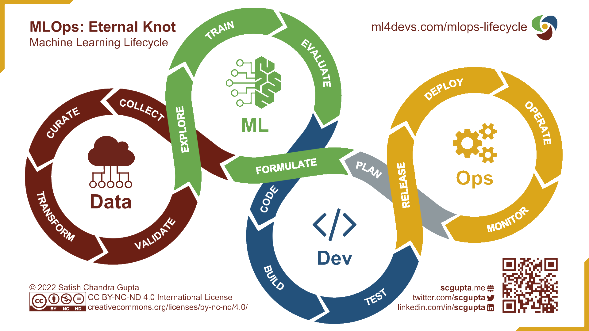
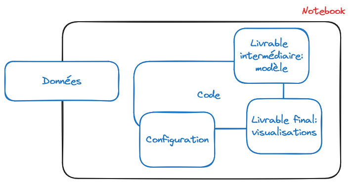
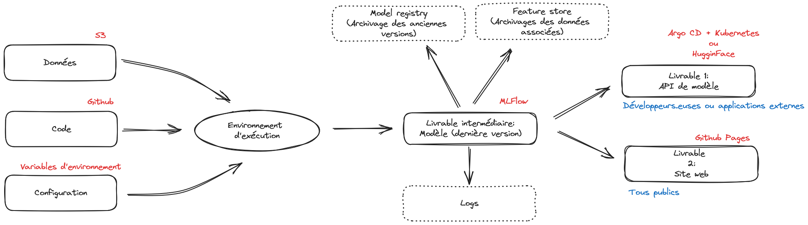
Il est important de bien lire les consignes et d’y aller progressivement. Certaines étapes peuvent être rapides, d’autres plus fastidieuses ; certaines être assez guidées, d’autres vous laisser plus de liberté. Si vous n’effectuez pas une étape, vous risquez de ne pas pouvoir passer à l’étape suivante qui en dépend.
Bien que l’exercice soit applicable sur toute configuration bien faite, nous recommandons de privilégier l’utilisation du SSP Cloud, où tous les outils nécessaires sont pré-installés et pré-configurés. Le service VSCode ne sera en effet que le point d’entrée pour l’utilisation d’outils plus exigeants sur le plan de l’infrastructure: Argo, MLFLow, etc.
Ce que cette application ne couvre pas (pour le moment)
A l’heure actuelle, cette application se concentre sur la mise en oeuvre fiable de l’entraînement de modèles de machine learning. Comme vous pouvez le voir, quand on part d’aussi loin qu’un projet monolithique dans un notebook, c’est un travail conséquent d’en arriver à un pipeline pensé pour la production. Cette application vise à vous sensibiliser au fait qu’avoir la Figure 3 en tête et adopter une organisation de travail et faire des choix techniques adéquats, vous fera économiser des dizaines voire centaines d’heures lorsque votre modèle aura vocation à passer en production.
A l’heure actuelle, cette application ne se concentre que sur une partie du cycle de vie d’un projet data ; il y a déjà fort à faire. Nous nous concentrons sur l’entraînement et la mise à disposition d’un modèle à des fins opérationnelles. C’est la première partie du cycle de vie d’un modèle. Dans une approche MLOps, il faut également penser la maintenance de ce modèle et les enjeux que représentent l’arrivée continue de nouvelles données, ou le besoin d’en collecter de nouvelles à travers des annotations, sur la qualité prédictive d’un modèle. Toute entreprise qui ne pense pas cet après est vouée à se faire doubler par un nouveau venu. Une prochaine version de cette application permettra certainement d’illustrer certains des enjeux afférants à la vie en production d’un modèle (supervision, annotations…) sur notre cas d’usage.
Il convient aussi de noter que nous ne faisons que parcourir la surface des sujets que nous évoquons. Ce cours, déjà dense, deviendrait indigeste si nous devions présenter chaque outil dans le détail. Nous laissons donc les curieux approfondir chacun des outils que nous présentons pour découvrir comment en tirer le maximum (et si vous avez l’impression que nous oublions des éléments cruciaux, les issues et pull requests sont bienvenues).
Partie 0 : initialisation du projet
Nous allons prendre comme point de départ un projet livré exclusivement avec un notebook, à la manière d’un challenge Kaggle. Vous pourrez ainsi voir à quel point ce type de livrable est très loin d’être satisfaisant si on veut que le projet soit réutilisable.
Les premières étapes consistent à mettre en place son environnement de travail sur Github:
Générer un jeton d’accès (token) sur
GitHubafin de permettre l’authentification en ligne de commande à votre compte. La procédure est décrite ici. Vous ne voyez ce jeton qu’une fois, ne fermez pas la page de suite.Mettez de côté ce jeton en l’enregistrant dans un gestionnaire de mot de passe ou dans l’espace “Mon compte” du
SSP Cloud.Forker le dépôt
Github: https://github.com/ensae-reproductibilite/application en faisant attention à une option :- Décocher la case “Copy the
mainbranch only” afin de copier également les tagsGitqui nous permettront de faire les checkpoint.
- Décocher la case “Copy the
Ce que vous devriez voir sur la page de création du fork.
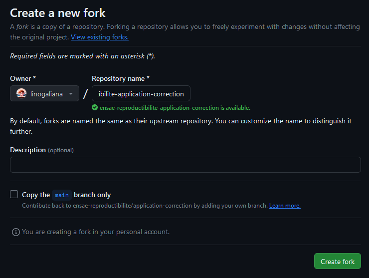
Nous recommandons d’utiliser, tout au long de ce projet, l’environnement de développement VSCode. En plus d’être très bien construit, les nombreuses extensions disponibles rendent celui-ci adaptable à tous nos besoins. Comme il s’agit de l’outil sur lequel vous passerez votre quotidien, n’hésitez pas à personnaliser celui-ci grâce aux nombreuses ressources disponibles en ligne1.
Il est maintenant possible de ce lancer dans la création de l’environnement de travail:
- Ouvrir un service
VSCodesur le SSP Cloud. Vous pouvez aller dans la pageMy Serviceset cliquer surNew service. Sinon, vous pouvez initialiser la création du service en cliquant directement ici. Modifier les options suivantes:- Dans l’onglet
Role, sélectionner le rôleAdmin; - Dans l’onglet
Networking, cliquer sur “Enable a custom service port” et laisser la valeur par défaut 5000 pour le numéro du port - (optionnel) Pour préinstaller quelques extensions supplémentaires à celles disponibles par défaut, dans l’onglet
Init, dans le champPersonalInit, renseigner l’adresse https://raw.githubusercontent.com/ensae-reproductibilite/website/refs/heads/main/chapters/applications/init.sh
- Dans l’onglet
- Clôner votre dépôt
Githuben utilisant le terminal depuisVisual Studio(Terminal > New Terminal) et en passant directement le token dans l’URL selon cette structure:
terminal
git clone https://$TOKEN@github.com/$USERNAME/application.gitoù $TOKEN et $USERNAME sont à remplacer, respectivement, par le jeton que vous avez généré précédemment et votre nom d’utilisateur.
Le script d’initialisation proposé
Ce script initialise quelques extensions intéressantes pour le développement de projets utilisant Python ou des fichiers textes type Markdown ou YAML: diagnostic, mise en forme automatisée, etc.
#!/bin/bash
# Define the configuration directory for VS Code
VSCODE_CONFIG_DIR="$HOME/.local/share/code-server/User"
# Create the configuration directory if necessary
mkdir -p "$VSCODE_CONFIG_DIR"
# User settings file
SETTINGS_FILE="$VSCODE_CONFIG_DIR/settings.json"
code-server --install-extension yzhang.markdown-all-in-one
code-server --install-extension oderwat.indent-rainbow
code-server --install-extension tamasfe.even-better-toml
code-server --install-extension aaron-bond.better-comments
code-server --install-extension github.vscode-github-actions
# Replace default flake8 linter with project-preconfigured ruff
code-server --uninstall-extension ms-python.flake8
code-server --install-extension charliermarsh.ruff
jq '. + {
"workbench.colorTheme": "Default Dark Modern", # Set the theme
"editor.rulers": [80, 100, 120], # Add specific vertical rulers
"files.trimTrailingWhitespace": true, # Automatically trim trailing whitespace
"files.insertFinalNewline": true, # Ensure files end with a newline
"flake8.args": [
"--max-line-length=100" # Max line length for Python linting
]
}' "$SETTINGS_FILE" > "$SETTINGS_FILE.tmp" && mv "$SETTINGS_FILE.tmp" "$SETTINGS_FILE"Si, dans quelques jours, vous désirez relancer un service avec cette configuration, vous pouvez cliquer sur ce lien:
En cliquant sur l’onglet Git, vous pouvez renseigner directement votre URL de la forme https://github.com/username/depot.git: cela clônera votre dépôt dans le service et injectera le token pour vous économiser l’authentification à venir lors de la phase de push.
Partie 1 : qualité du script
Cette première partie vise à rendre le projet conforme aux bonnes pratiques présentées dans le cours.
Si vous suivez ces premières applications, vous devriez acquérir les notions suivantes :
- Utilisation du terminal (voir Linux 101) ;
- Qualité du code (voir Qualité du code) ;
- Architecture de projets (voir Architecture des projets) ;
- Contrôle de version avec
Git(voir RappelsGit) ; - Travail collaboratif avec
GitetGitHub(voir RappelsGit).
Le plan de la partie est le suivant :
- S’assurer que le script fonctionne ;
- Nettoyer le code des scories formelles avec un linter et un formatter ;
- Paramétrer le script ;
- Utiliser des fonctions.
Étape 1 : s’assurer que le script s’exécute correctement
On va partir du fichier notebook.py qui reprend le contenu du notebook2 mais dans un script classique. Le travail de nettoyage en sera facilité.
La première étape est simple, mais souvent oubliée : vérifier que le code fonctionne correctement. Pour cela, nous recommandons de faire un aller-retour entre le script ouvert dans VSCode et un terminal pour le lancer.
- Ouvrir dans
VSCodele scripttitanic.py; - Exécuter le script en ligne de commande (
python titanic.py)3 pour détecter les erreurs ; - Corriger les deux erreurs qui empêchent la bonne exécution ;
- Vérifier le fonctionnement du script en utilisant la ligne de commande:
terminal
python titanic.pyLe code devrait afficher des sorties.
Aide sur les erreurs rencontrées
La première erreur rencontrée est une alerte FileNotFoundError, la seconde est liée à un package.
Il est maintenant temps de commit les changements effectués avec Git4 :
terminal
git add titanic.py
git commit -m "Corrige l'erreur qui empêchait l'exécution"
git pushterminal
curl -sSL https://raw.githubusercontent.com/ensae-reproductibilite/website/refs/heads/main/chapters/applications/overwrite.sh -o update.sh && chmod +x update.sh
./update.sh appli12
rm -f update.sh- 1
- Récupérer le script de checkpoint
- 2
- Avancer à l’état à l’issue de l’application appli1
- 3
- Nettoyer derrière nous

Étape 2: utiliser un linter puis un formatter
On va maintenant améliorer la qualité de notre code en appliquant les standards communautaires. Pour cela, on va principalement utiliser Ruff qui est à la fois un linter et un formatter5. On va aussi utiliser le linter classique PyLint qui présente une fonctionnalité assez pédagogique de notation d’un script à l’aune des standards communautaires évoqués dans la partie Qualité du code.
Ce nettoyage automatique du code permettra, au passage, de restructurer notre script de manière plus naturelle.
- Diagnostiquer et évaluer la qualité de
titanic.pyavecPyLint. Regarder la note obtenue. - Utiliser le formatter ruff via la commande
ruff check titanic.pypour voir les problèmes recensés par celui-ci. Appliquer l’option--fixsuggérée pour commencer à formatter le fichier. Evaluer à nouveau ce fichier avecPyLint. - Utiliser
ruff format titanic.pypour modifier la mise en forme du fichier. - Réutiliser
PyLintpour diagnostiquer l’amélioration de la qualité du script et le travail qui reste à faire. - Comme la majorité du travail restant est à consacrer aux imports:
- Délimiter des parties dans votre code pour rendre sa structure plus lisible. Si des parties vous semblent être dans le désordre, vous pouvez réordonner le script (mais n’oubliez pas de le tester)
terminal
curl -sSL https://raw.githubusercontent.com/ensae-reproductibilite/website/refs/heads/main/chapters/applications/overwrite.sh -o update.sh && chmod +x update.sh
./update.sh appli22
rm -f update.sh- 1
- Récupérer le script de checkpoint
- 2
- Avancer à l’état à l’issue de l’application appli2
- 3
- Nettoyer derrière nous
Le code est maintenant lisible, il obtient à ce stade une note formelle proche de 10. Mais il n’est pas encore totalement intelligible ou fiable. Il y a notamment quelques redondances de code auxquelles nous allons nous attaquer par la suite. Néanmoins, avant cela, occupons-nous de mieux gérer certains paramètres du script: jetons d’API et chemin des fichiers.
Étape 3: gestion des paramètres
VSCode actif avec la configuration proposée dans l'application préliminaire, vous pouvez repartir de ce service:Et ensuite, après avoir clôné le dépôt
terminal
curl -sSL https://raw.githubusercontent.com/ensae-reproductibilite/website/refs/heads/main/chapters/applications/overwrite.sh -o update.sh && chmod +x update.sh
./update.sh appli22
rm -f update.sh- 1
- Récupérer le script de checkpoint
- 2
- Avancer à l’état à l’issue de l’application appli2
- 3
- Nettoyer derrière nous
L’exécution du code et les résultats obtenus dépendent de certains paramètres définis dans le code. L’étude de résultats alternatifs, en jouant sur des variantes des (hyper)paramètres, est à ce stade compliquée car il est nécessaire de parcourir le code pour trouver ces paramètres. De plus, certains paramètres personnels comme des jetons d’API ou des mots de passe n’ont pas vocation à être présents dans le code.
Il est plus judicieux de considérer ces paramètres comme des variables d’entrée du script. Cela peut être fait de deux manières:
- Avec des arguments optionnels appelés depuis la ligne de commande (Application 3a). Cela peut être pratique pour mettre en oeuvre des tests automatisés mais n’est pas forcément pertinent pour toutes les variables. Nous allons montrer cet usage avec le nombre d’arbres de notre random forest ;
- En utilisant un fichier de configuration dont les valeurs sont importées dans le script principal (Application 3b).
Un exemple de définition d’un argument pour l’utilisation en ligne de commande
prenom.py
import argparse
parser = argparse.ArgumentParser(description="Qui êtes-vous?")
parser.add_argument(
"--prenom", type=str, default="Toto", help="Un prénom à afficher"
)
args = parser.parse_args()
print(args.prenom)Exemples d’utilisations en ligne de commande
terminal
python prenom.py
python prenom.py --prenom "Zinedine"- En s’inspirant de l’exemple ci-dessus 👆️, créer une variable
n_treesqui peut éventuellement être paramétrée en ligne de commande et dont la valeur par défaut est 20 ; - Tester cette paramétrisation en ligne de commande avec la valeur par défaut puis 2, 10 et 50 arbres.
L’exercice suivant permet de mettre en application le fait de paramétriser un script en utilisant des variables définies dans un fichier YAML.
- Installer le package
python-dotenvque nous allons utiliser pour charger notre jeton d’API à partir d’une variable d’environnement. - A partir de l’exemple de la documentation, utiliser la fonction
load_dotenvpour charger dansPythonnos variables d’environnement à partir d’un fichier (vous pouvez le créer mais ne pas le remplir encore avec les valeurs voulues, ce sera fait ensuite) - Créer la variable comme proposé ci-dessous et vérifier la sortie de
Pythonen faisant tournertitanic.pyen ligne de commande ce code
titanic.py
jeton_api = os.environ["JETON_API"]- Cela devrait vous renvoyer une erreur, comprenez-vous pourquoi ? Maintenant introduire la valeur voulue pour le jeton d’API dans le fichier d’environnement lu par
dotenv. - S’il n’existe pas déjà, créer un fichier
.gitignore(cf. ChapitreGit). Ajouter dans ce fichier.envcar il ne faut pas committer ce fichier. Au passage ajouter__pycache__/au.gitignore6, cela évitera d’avoir à le faire ultérieurement ; - Créer un fichier
README.mdoù vous indiquez qu’il faut créer un fichier.envpour pouvoir utiliser l’API.
terminal
curl -sSL https://raw.githubusercontent.com/ensae-reproductibilite/website/refs/heads/main/chapters/applications/overwrite.sh -o update.sh && chmod +x update.sh
./update.sh appli32
rm -f update.sh- 1
- Récupérer le script de checkpoint
- 2
- Avancer à l’état à l’issue de l’application appli3
- 3
- Nettoyer derrière nous
Étape 4 : Privilégier la programmation fonctionnelle
Nous allons mettre en fonctions les parties importantes de l’analyse. Ceci facilitera l’étape ultérieure de modularisation de notre projet. Comme cela est évoqué dans les éléments magistraux de ce cours, l’utilisation de fonctions va rendre notre code plus concis, plus traçable, mieux documenté.
Cet exercice étant chronophage, il n’est pas obligatoire de le réaliser en entier. L’important est de comprendre la démarche et d’adopter fréquemment une approche fonctionnelle7. Pour obtenir une chaine entièrement fonctionnalisée, vous pouvez reprendre le checkpoint.
Pour commencer, cet exercice fait un petit pas de côté pour faire comprendre la manière dont les pipelines scikit sont un outil au service des bonnes pratiques.
Scikit ?
- Le pipeline
Scikitd’estimation et d’évaluation vous a été donné tel quel. Regardez, ci-dessous, le code équivalent sans utiliser de pipelineScikit:
Le code équivalent sans pipeline
from sklearn.impute import SimpleImputer
from sklearn.preprocessing import MinMaxScaler, OneHotEncoder
from sklearn.compose import ColumnTransformer
from sklearn.ensemble import RandomForestClassifier
from sklearn.metrics import confusion_matrix
import pandas as pd
import numpy as np
# Définition des variables
numeric_features = ["Age", "Fare"]
categorical_features = ["Embarked", "Sex"]
# PREPROCESSING ----------------------------
# Handling missing values for numerical features
num_imputer = SimpleImputer(strategy="median")
X_train[numeric_features] = num_imputer.fit_transform(X_train[numeric_features])
X_test[numeric_features] = num_imputer.transform(X_test[numeric_features])
# Scaling numerical features
scaler = MinMaxScaler()
X_train[numeric_features] = scaler.fit_transform(X_train[numeric_features])
X_test[numeric_features] = scaler.transform(X_test[numeric_features])
# Handling missing values for categorical features
cat_imputer = SimpleImputer(strategy="most_frequent")
X_train[categorical_features] = cat_imputer.fit_transform(X_train[categorical_features])
X_test[categorical_features] = cat_imputer.transform(X_test[categorical_features])
# One-hot encoding categorical features
encoder = OneHotEncoder(handle_unknown='ignore', sparse_output=False)
X_train_encoded = encoder.fit_transform(X_train[categorical_features])
X_test_encoded = encoder.transform(X_test[categorical_features])
# Convert encoded features into a DataFrame
X_train_encoded = pd.DataFrame(X_train_encoded, columns=encoder.get_feature_names_out(categorical_features), index=X_train.index)
X_test_encoded = pd.DataFrame(X_test_encoded, columns=encoder.get_feature_names_out(categorical_features), index=X_test.index)
# Drop original categorical columns and concatenate encoded ones
X_train = X_train.drop(columns=categorical_features).join(X_train_encoded)
X_test = X_test.drop(columns=categorical_features).join(X_test_encoded)
# MODEL TRAINING ----------------------------
# Defining the model
model = RandomForestClassifier(n_estimators=n_trees)
# Fitting the model
model.fit(X_train, y_train)
# EVALUATION ----------------------------
# Scoring
rdmf_score = model.score(X_test, y_test)
print(f"{rdmf_score:.1%} de bonnes réponses sur les données de test pour validation")
# Confusion matrix
print(20 * "-")
print("matrice de confusion")
print(confusion_matrix(y_test, model.predict(X_test)))Voyez-vous l’intérêt de l’approche par pipeline en termes de lisibilité, évolutivité et fiabilité ?
Créer un notebook qui servira de brouillon. Y introduire le code suivant:
Le code à copier-coller dans un notebook
import pandas as pd
from sklearn.preprocessing import OneHotEncoder, MinMaxScaler
from sklearn.ensemble import RandomForestClassifier
from sklearn.impute import SimpleImputer
from sklearn.pipeline import Pipeline
from sklearn.compose import ColumnTransformer
train = pd.read_csv("train.csv")
test = pd.read_csv("test.csv")
X_train, y_train = train.drop("Survived", axis="columns"), train["Survived"]
X_test, y_test = test.drop("Survived", axis="columns"), train["Survived"]
MAX_DEPTH = None
MAX_FEATURES = "sqrt"
n_trees=20
numeric_features = ["Age", "Fare"]
categorical_features = ["Embarked", "Sex"]
# Variables numériques
numeric_transformer = Pipeline(
steps=[
("imputer", SimpleImputer(strategy="median")),
("scaler", MinMaxScaler()),
]
)
# Variables catégorielles
categorical_transformer = Pipeline(
steps=[
("imputer", SimpleImputer(strategy="most_frequent")),
("onehot", OneHotEncoder()),
]
)
# Preprocessing
preprocessor = ColumnTransformer(
transformers=[
("Preprocessing numerical", numeric_transformer, numeric_features),
(
"Preprocessing categorical",
categorical_transformer,
categorical_features,
),
]
)
# Pipeline
pipe = Pipeline(
[
("preprocessor", preprocessor),
("classifier", RandomForestClassifier(
n_estimators=n_trees,
max_depth=MAX_DEPTH,
max_features=MAX_FEATURES
)),
]
)
pipe.fit(X_train, y_train)Afficher ce pipeline dans une cellule de votre notebook. Cela vous aide-t-il mieux à comprendre les différentes étapes du pipeline de modélisation ?
Comment pouvez-vous accéder aux étapes de preprocessing ?
- Comment pouvez-vous faire pour appliquer le pipeline de preprocessing des variables numériques (et uniquement celui-ci) à ce DataFrame ?
Le DataFrame à créer pour appliquer un bout de notre pipeline
import numpy as np
new_data = {
"Age": [22, np.nan, 35, 28, np.nan],
"Fare": [7.25, 8.05, np.nan, 13.00, 15.50]
}
new_data = pd.DataFrame(new_data)- Normalement ce code ne devrait pas prendre plus d’une demie-douzaine de lignes. Sans pipeline le code équivalent, beaucoup plus verbeux et moins fiable, ressemble à celui-ci
Le code équivalent, sans pipeline
import pandas as pd
import numpy as np
from sklearn.impute import SimpleImputer
from sklearn.preprocessing import MinMaxScaler
# Définition des nouvelles données
new_data = pd.DataFrame({
"Age": [25, np.nan, 40, 33, np.nan],
"Fare": [10.50, 7.85, np.nan, 22.00, 12.75]
})
# Définition des transformations (même que dans le pipeline)
num_imputer = SimpleImputer(strategy="median")
scaler = MinMaxScaler()
# Apprentissage des transformations sur X_train (assumant que vous l'avez déjà)
X_train_numeric = X_train[["Age", "Fare"]] # Supposons que X_train existe
num_imputer.fit(X_train_numeric)
scaler.fit(num_imputer.transform(X_train_numeric))
# Transformation des nouvelles données
new_data_imputed = num_imputer.transform(new_data)
new_data_scaled = scaler.transform(new_data_imputed)
# Création du DataFrame final
new_data_preprocessed = pd.DataFrame(
new_data_scaled,
columns=["Age_scaled", "Fare_scaled"] # Générer des noms de colonnes adaptés
)
# Affichage du DataFrame
print(new_data_preprocessed)- Imaginons que vous ayez déjà des données préprocessées:
Créer des données préprocessées
import numpy as np
import pandas as pd
new_data = pd.DataFrame({
"Age": [25, np.nan, 40, 33, np.nan],
"Fare": [10.50, 7.85, np.nan, 22.00, 12.75],
"Embarked": ["S", "C", np.nan, "Q", "S"],
"Sex": ["male", "female", "male", np.nan, "female"]
})
new_y = np.random.randint(0, 2, size=len(new_data))
preprocessed_data = pd.DataFrame(
pipe[:-1].transform(new_data),
columns = preprocessor_numeric.get_feature_names_out()
)
preprocessed_data- Déterminer le score en prédiction sur ces données
Maintenant, revenons à notre chaine de production et appliquons des fonctions pour la rendre plus lisible, plus fiable et plus modulaire.
Cette application peut être chronophage, vous pouvez aller plus ou moins loin dans la fonctionalisation de votre script en fonction du temps dont vous disposez.
Cette application vise à transformer nos tests de validation de données en fonctions génériques. Nous allons adopter la convention arbitraire de nommer nos vérifications check_*.
- Pour comprendre la manière dont une fonction peut être un outil d’autodocumentation, créer une fonction
check_name_formattingqui vérifie que le colonne “Name” est bien séparable en deux éléments par une virgule. Faire en sorte que cette fonction soit pure8. Utiliser le type hinting des arguments pour renforcer l’autodocumentation de la chaîne9. - Pour comprendre la manière dont une fonction répond au problème du don’t repeat yourself, créer une fonction
check_missing_valuespour recenser les valeurs manquantes pour une colonne donnée. - Faire la même chose avec une fonction
check_data_leakage - Appliquer
check_missing_valuesà l’ensemble des variables du dataset10
terminal
curl -sSL https://raw.githubusercontent.com/ensae-reproductibilite/website/refs/heads/main/chapters/applications/overwrite.sh -o update.sh && chmod +x update.sh
./update.sh appli42
rm -f update.sh- 1
- Récupérer le script de checkpoint
- 2
- Avancer à l’état à l’issue de l’application appli4
- 3
- Nettoyer derrière nous
Cela ne se remarque pas encore vraiment car nous avons de nombreuses définitions de fonctions mais notre chaine de production est beaucoup plus concise (le script fait environ 150 lignes dont une centaine issues de définitions de fonctions génériques). Cette auto-discipline facilitera grandement les étapes ultérieures. Cela aurait été néanmoins beaucoup moins coûteux en temps d’adopter ces bons gestes de manière plus précoce.
Partie 2 : adoption d’une structure modulaire
Dans la partie précédente, on a appliqué de manière incrémentale de nombreuses bonnes pratiques vues tout au long du cours. Ce faisant, on s’est déjà considérablement rapprochés d’un possible partage du code : celui-ci est lisible et intelligible. Le code est proprement versionné sur un dépôt GitHub.
Cependant, le projet est encore perfectible: il est encore difficile de rentrer dedans si on ne sait pas exactement ce qu’on recherche. L’objectif de cette partie est d’isoler les différentes étapes de notre pipeline. Outre le gain de clarté pour notre projet, nous économiserons beaucoup de peines pour la mise en production ultérieure de notre modèle.
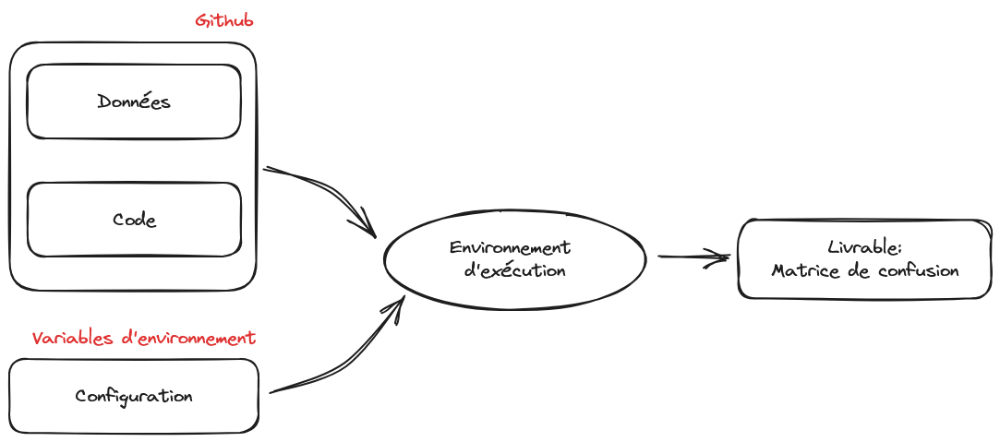
Dans cette partie nous allons continuer les améliorations incrémentales de notre projet avec les étapes suivantes:
- Modularisation du code
Pythonpour séparer les différentes étapes de notre pipeline ; - Adopter une structure standardisée pour notre projet afin d’autodocumenter l’organisation de celui-ci ;
- Documenter les packages indispensables à l’exécution du code ;
- Stocker les données dans un environnement adéquat afin de continuer la démarche de séparer conceptuellement les données du code en de la configuration.
Étape 1 : modularisation
Nous allons profiter de la modularisation pour adopter une structure applicative pour notre code. Celui-ci n’étant en effet plus lancé que depuis la ligne de commande, on peut considérer qu’on construit une application générique où un script principal (main.py) encapsule des éléments issus d’autres scripts Python.
- Déplacer les fonctions dans un script dédié nommé
check.py. Ici un seul script suffit car nos fonctions partagent une thématique commune. - Spécifier les dépendances (i.e. les packages à importer) dans les modules pour que ceux-ci puissent s’exécuter indépendamment ;
- Renommer
titanic.pyenmain.pypour suivre la convention de nommage des projetsPython; - Importer les fonctions nécessaires à partir du module.
- Vérifier que tout fonctionne bien en exécutant le script
mainà partir de la ligne de commande :
terminal
python main.py- Optionnel: profitez en pour mettre un petit coup de formatter à votre projet, si vous ne l’avez pas fait régulièrement.
terminal
curl -sSL https://raw.githubusercontent.com/ensae-reproductibilite/website/refs/heads/main/chapters/applications/overwrite.sh -o update.sh && chmod +x update.sh
./update.sh appli52
rm -f update.sh- 1
- Récupérer le script de checkpoint
- 2
- Avancer à l’état à l’issue de l’application appli5
- 3
- Nettoyer derrière nous
Étape 2 : adopter une architecture standardisée de projet
On dispose maintenant d’une application Python fonctionnelle. Néanmoins, le projet est certes plus fiable mais sa structuration laisse à désirer et s’il continuait à être organisé de la même manière à mesure qu’il devenait plus ambitieux il deviendrait de plus en plus difficile de rentrer à nouveau dans celui-ci après une pause de quelques jours.
Etat actuel du projet 🙈
├── .gitignore
├── .env
├── data.csv
├── README.md
├── check.py
├── titanic.ipynb
└── main.pyComme cela est expliqué dans la partie Structure des projets, on va adopter une structure certes arbitraire mais qui va faciliter l’autodocumentation de notre projet. De plus, une telle structure va faciliter des évolutions optionnelles comme la packagisation du projet. Passer d’une structure modulaire bien faite à un package est quasi-immédiat en Python.
On va donc modifier l’architecture de notre projet pour la rendre plus standardisée. Pour cela, on va s’inspirer des structures cookiecutter qui génèrent des templates de projet. En l’occurrence notre source d’inspiration sera le template datascience issu d’un effort communautaire pour déterminer la localisation adéquate des éléments communs à tout projet de science de données.
L’idée de cookiecutter est de proposer des templates que l’on utilise pour initialiser un projet, afin de bâtir à l’avance une structure évolutive. La syntaxe à utiliser dans ce cas est la suivante :
terminal
pip install cookiecutter
cookiecutter https://github.com/drivendata/cookiecutter-data-scienceIci, on a déjà un projet, on va donc faire les choses dans l’autre sens : on va s’inspirer de la structure proposée afin de réorganiser celle de notre projet selon les standards communautaires.
En s’inspirant du cookiecutter data science on va adopter la structure suivante:
Structure recommandée
application
├── main.py
├── .gitignore
├── .env
├── README.md
├── data
│ ├── raw
│ │ └── titanic.csv
├── notebooks
│ └── titanic.ipynb
└── src
└── validation
└── check.py- (optionnel) Analyser et comprendre la structure de projet proposée par le template ;
- Modifier l’arborescence du projet selon le modèle ci-dessus ;
- Mettre à jour l’import des dépendances, le fichier de configuration et
main.pyavec les nouveaux chemins ;
terminal
curl -sSL https://raw.githubusercontent.com/ensae-reproductibilite/website/refs/heads/main/chapters/applications/overwrite.sh -o update.sh && chmod +x update.sh
./update.sh appli62
rm -f update.sh- 1
- Récupérer le script de checkpoint
- 2
- Avancer à l’état à l’issue de l’application appli6
- 3
- Nettoyer derrière nous
Étape 3: mieux tracer notre chaine de production
Indiquer l’environnement minimal de reproductibilité
Le script main.py nécessite un certain nombre de packages pour être fonctionnel. Chez vous les packages nécessaires sont bien sûr installés mais êtes-vous assuré que c’est le cas chez la personne qui testera votre code ?
Afin de favoriser la portabilité du projet, il est d’usage de “fixer l’environnement”, c’est-à-dire d’indiquer dans un fichier toutes les dépendances utilisées ainsi que leurs version. Nous proposons de créer un fichier requirements.txt minimal, sur lequel nous reviendrons dans la partie consacrée aux environnements reproductibles.
Le fichier requirements.txt est conventionnellement localisé à la racine du projet. Ici on ne va pas fixer les versions, on raffinera ce fichier ultérieurement.
requirements.txt
- Créer un fichier
requirements.txtavec la liste des packages nécessaires - Ajouter une indication dans
README.mdsur l’installation des packages grâce au fichierrequirements.txt
Tracer notre chaîne
Quand votre projet passera en production, vous aurez un accès limité à celui-ci. Il est donc important de faire remonter, par le biais du logging des informations critiques sur votre projet qui vous permettront de savoir où il en est (si vous avez accès à la console où il tourne) ou là où il s’est arrêté.
L’utilisation de print montre rapidement ses limites pour cela. Les informations enregistrées ne persistent pas après la session et sont quelques peu rudimentaires. Pour faire du logging, la librairie consacrée depuis longtemps en Python est… logging. Elle permettra d’horodater nos messages, d’avoir différents types de messages et d’enregistrer ceux-ci dans un fichier dédié.
- Aller sur la documentation de la librairie ici et sur ce tutoriel pour trouver des sources d’inspiration sur la configuration et l’utilisation de
logging. - Pour afficher les messages dans la console et dans un fichier de log, s’inspirer de cette réponse sur stack overflow.
- Tester en ligne de commande votre code et observer le fichier de log. Ajouter celui-ci au
.gitignore.
terminal
curl -sSL https://raw.githubusercontent.com/ensae-reproductibilite/website/refs/heads/main/chapters/applications/overwrite.sh -o update.sh && chmod +x update.sh
./update.sh appli72
rm -f update.sh- 1
- Récupérer le script de checkpoint
- 2
- Avancer à l’état à l’issue de l’application appli7
- 3
- Nettoyer derrière nous
Étape 4 : stocker les données de manière externe
Jusqu’à présent, nous avons une chaîne reproductible puisque si on récupère le code, on récupère aussi les données. Ce n’est pas une bonne pratique. Nous allons maintenant séparer conceptuellement code et données. Cela va nous amener à nous poser trois questions : où stocker les données ? dans quel format ? comment les lire ?
La réponse à ces trois formats permettra d’avoir le nec plus ultra des bonnes pratiques: des données au format Parquet hébergé sur le cloud et lues dans Python par l’intermédiaire de DuckDB.
Pour cette partie, il faut avoir un service VSCode dont les jetons d’authentification à S3 sont valides. Si vous avez un doute, vous reporter à Tip 1.
Pour les prochaines applications, on va supposer l’utilisation d’un système de stockage cloud de type S3 (pour en savoir plus sur l’intérêt de cette approche, se reporter au chapitre dédié).
Sans perte de généralité, on va supposer que le S3 en question est celui du SSPCloud (mais cela fonctionnerait de manière assez transparente si nous proposions d’utiliser un cloud provider privé comme AWS). Pour en savoir plus sur l’adaptation de ce tutoriel hors du SSPCloud, se reporter vers l’encadré dédié (Important 1).
Pour que votre Python interagisse avec S3, il vous faut des jetons d’authentification. Ils permettent de dire à S3 que c’est bien vous qui essayez de consommer la donnée à laquelle vous avez le droit par le biais d’un Python qu’il ne connaît pas a priori.
Des jetons d’authentification sont créés automatiquement pour vous lorsque vous lancez un service interactif VSCode sur le SSPCloud. Ils ont cependant une durée de vie limitée (5 jours). Si votre service a des jetons ayant expiré, vous allez avoir une erreur 403 lorsque vous essaierai d’interagir avec S3.
Deux approches sont possibles:
- Récupérer des jetons valides sur https://datalab.sspcloud.fr/account/storage et les renseigner à l’endroit adéquat dans votre service VSCode.
- Créer un nouveau service qui bénéficiera automatiquement de l’injection de jetons à jour.
La 2e voie est recommandée. Le plus simple est de 1/ cliquer sur le bouton suivant
2/ remplir l’onglet Git avec l’url de votre dépôt pour bénéficier du clonage automatique de celui-ci et 3/ faire le checkpoint post appli7.
De cette manière votre VSCode sera presque prêt à l’emploi, à l’image de ce que vous aviez fait pour l’application 0. Il vous suffira d’ouvrir un terminal et faire pip install -r requirements.txt && python main.py pour pouvoir démarrer l’application.
VSCode actif avec la configuration proposée dans l'application préliminaire, vous pouvez repartir de ce service:Et ensuite, après avoir clôné le dépôt
terminal
curl -sSL https://raw.githubusercontent.com/ensae-reproductibilite/website/refs/heads/main/chapters/applications/overwrite.sh -o update.sh && chmod +x update.sh
./update.sh appli72
rm -f update.sh- 1
- Récupérer le script de checkpoint
- 2
- Avancer à l’état à l’issue de l’application appli7
- 3
- Nettoyer derrière nous
L’étape précédente nous a permis d’isoler la configuration. Nous avons conceptuellement isolé les données du code lors des applications précédentes. Cependant, nous n’avons pas été au bout du chemin car le stockage des données reste conjoint à celui du code. Nous allons maintenant dissocier ces deux éléments.
SSPCloud ? (une idée saugrenue mais sait-on jamais)
Les exemples à venir peuvent très bien être répliqués sur n’importe quel cloud provider qui propose une solution de type S3, qu’il s’agisse d’un cloud provider privé (AWS, GCP, Azure, etc.) ou d’une réinstanciation ad hoc du projet Onyxia, le logiciel derrière le SSPCloud.
Pour un système de stockage S3, il suffit de changer les paramètres de connexion de s3fs (endpoint, region, etc.). Pour les stockages sur GCP, les codes sont presque équivalents, il suffit de remplacer la librairie s3fs par gcfs; ces deux librairies sont en fait des briques d’un standard plus général de gestion de systèmes de fichiers en Python ffspec.
Le scénario type de la première partie de l’application (appli8a) est que nous avons une source brute, reçue sous forme de CSV, dont on ne peut changer le format. Un doublon de celle-ci a été écrit sur S3 et nous allons utiliser le fichier depuis cet emplacement Il aurait été idéal d’avoir un format plus adapté au traitement de données pour ce fichier mais ce n’était pas de notre ressort.
Notre chaine va aller chercher ce fichier, travailler dessus jusqu’à valoriser celui-ci sous la forme de notre matrice de confusion. Néanmoins, ici, nous avons une donnée qui ne change jamais. On n’a pas de mise à jour fréquente de données qui justifie de ne pas changer, une fois pour toute, notre format de données afin d’en adopter un plus pertinent. En l’occurrence, nous allons utiliser le format Parquet. C’est l’objet de l’appli 8c.
Cette application va se dérouler en quatre temps:
- Upload de notre source brute (CSV) sur S3.
- Illustration de l’usage des librairies cloud native pour lire celle-ci.
- Conversion au format
Parquetde cette donnée et utilisation deDuckDBpour la lire. - Partage public de cette donnée pour la rendre accessible de manière plus simple à nos futures applications.
S3
Le SSPCloud repose sur une implémentation particulière du protocole S3 qui s’appelle MinIO. Cela étend les fonctionnalités de manipulation de fichiers en ligne de commande à des données n’étant pas présentes dans le filesystem local mais dans le cloud. En pratique
En pratique, l’implémentation MinIO permet notamment de manipuler des fichiers à distance comme s’ils étaient en local. Les commandes de manipulation de fichier du chapitre Linux 101 (lister, copier, supprimer…) sont étendues grâce à l’ajout d’un petit mc devant celle-ci.
Illustrons cela en copiant les données de départ vers votre bucket personnel.
Indice
Structure à adopter:
terminal
MY_BUCKET="nom_utilisateur_sspcloud"
mc cp data/raw/titanic.csv s3/${MY_BUCKET}/ensae-reproductibilite/data/raw/data.csvMY_BUCKET, l’emplacement de votre bucket personnel
Avant de modifier notre code Python, on va lister les fichiers se trouvant dans notre bucket. En ligne de commande, sur notre poste local, on ferait ls (cf. Linux 101). Cela ne va pas beaucoup différer avec les librairies cloud native:
terminal
- 1
- Changer avec le bucket
- 2
- Changer en fonction du chemin voulu
En utilisant l’explorateur de fichiers S3 du SSPCloud (datalab.sspcloud.fr/file-explorer), faites une deuxième vérification que vos données sont bien sauvegardées sur S3.
Vous pouvez ensuite supprimer le CSV de données présent dans votre dossier local, il ne nous sera plus utile.
On va maintenant lire directement une donnée stockée sur S3 avec Python. Pour illustrer le fait qu’être sur un système cloud avec les librairies adaptées change peu notre code, on va lire directement un fichier CSV stocké sur le SSPCloud, sans passer par un fichier en local11.
Pour illustrer la cohérence avec un système de fichier local, voici trois solutions pour lire le fichier que vous venez de mettre sur S3 (s’appuyant sur s3fs, Arrow ou DuckDB). Attention, il faut avoir des jetons de connexion à S3 à jour. Si vous avez cette erreur
A client error (InvalidAccessKeyId) occurred when calling the ListBuckets operation: The AWS Access Key Id you provided does not exist in our records.
c’est que vos identifiants de connexion ne sont plus à jour (pour des raisons de sécurité, ils sont régulièrement renouvelés). Dans ce cas, consulter Important 1.
S3
Cet exercice illustre trois manières de lire des données sur S3 au format CSV. Ce choix est arbitraire car il existe de nombreux frameworks concurrents ou complémentaires à Pandas, Arrow ou DuckDB qui permettent de lire des données depuis S3.
Pour le moment on va garder comme framework de prédilection Pandas mais la bascule vers Parquet nous fera privilégier DuckDB dans les prochaines applications.
Dans un notebook, copier-coller et mettre à jour ces deux variables qui seront utilisées dans différents exemples:
- 1
- Changer avec le bucket
- 2
- Changer en fonction du chemin voulu
Maintenant lire la donnée depuis S3 avec ce code:
import s3fs
import pandas as pd
fs = s3fs.S3FileSystem(client_kwargs={"endpoint_url": "https://minio.lab.sspcloud.fr"})
with fs.open(f"s3://{MY_BUCKET}/{CHEMIN_FICHIER}") as f:
df = pd.read_csv(f)
dfimport s3fs
from pyarrow import csv
fs = s3fs.S3FileSystem(client_kwargs={"endpoint_url": "https://minio.lab.sspcloud.fr"})
with fs.open(f"s3://{MY_BUCKET}/{CHEMIN_FICHIER}") as f:
df = csv.read_csv(f)
dfimport os
import duckdb
con = duckdb.connect(database=":memory:")
query_definition = f"SELECT * FROM read_csv('s3://{MY_BUCKET}/{CHEMIN_FICHIER}')"
df = con.sql(query_definition)
dfPour illustrer le fonctionnement simple de S3 avec les fichiers Parquet, on propose de faire la même chose. Ici il n’est pas pertinent de mesurer le gain de temps car le fichier est très léger en CSV et s’importe ainsi instantanément. Pour faire des exercices plus pertinents sur ce sujet, afin de découvrir certaines bonnes pratiques, regarder les exercices supplémentaires dans le chapitre dédié à Parquet).
S3
D’abord, on va convertir notre fichier au format Parquet avec ce code (à faire tourner qu’une fois donc à ne pas mettre dans main.py mais dans un notebook ou un script jetable)
import os
import duckdb
1MY_BUCKET = "mon_nom_utilisateur_sspcloud"
2CHEMIN_FICHIER = "ensae-reproductibilite/data/raw/data.csv"
con = duckdb.connect(database=":memory:")
query_definition = f"SELECT * FROM read_csv('s3://{MY_BUCKET}/{CHEMIN_FICHIER}')"
con.sql(
f"""
COPY (
SELECT *
FROM read_csv_auto('s3://{MY_BUCKET}/{CHEMIN_FICHIER}')
)
TO 's3://{MY_BUCKET}/{CHEMIN_FICHIER.replace("csv", "parquet")}'
(FORMAT PARQUET);
"""
)- 1
- Changer avec le bucket
- 2
- Changer en fonction du chemin voulu
- 1
- Remplacer ici par la valeur appropriée
- 2
- Changer en fonction du chemin voulu
import os
import duckdb
con = duckdb.connect(database=":memory:")
query_definition = f"SELECT * FROM read_parquet('s3://{MY_BUCKET}/{CHEMIN_PARQUET}')"
df = con.sql(query_definition)
dfimport s3fs
import pandas as pd
chemin
fs = s3fs.S3FileSystem(client_kwargs={"endpoint_url": "https://minio.lab.sspcloud.fr"})
df = pd.read_parquet(f"s3://{MY_BUCKET}/{CHEMIN_PARQUET}", filesystem=fs)import pyarrow as pa
import pyarrow.parquet as pq
s3 = pa.fs.S3FileSystem(endpoint_override ="https://minio.lab.sspcloud.fr")
df = pq.read_table(f"{MY_BUCKET}/{CHEMIN_PARQUET}", filesystem=s3)
dfParquet
Nous n’avons pas explicité pourquoi Parquet est un choix pertinent pour la plupart des chaînes data. Ici la donnée est de taille réduite, cela ne nous pénalisera pas beaucoup de faire du CSV et du Pandas même si nous recommandons plutôt de faire du Parquet et de pousser le plus loin possible DuckDB avant de revenir à Pandas.
Pour découvrir, en pratique, les raisons de ces choix techniques, vous pouvez aller voir les exercices supplémentaires à la fin du chapitre sur les données).
Parquet avec DuckDB
Par défaut, le contenu de votre bucket est privé, seul vous y avez accès. Pour pouvoir lire votre donnée, vos applications externes devront utiliser des jetons vous identifiant. Ici, comme nous utilisons une donnée publique, vous pouvez rendre accessible celle-ci à tous en lecture. Dans le jargon S3, cela signifie donner un accès anonyme à votre donnée.
Le modèle de commande à utiliser dans le terminal est le suivant:
terminal
1BUCKET_PERSONNEL="nom_utilisateur_sspcloud"
mc anonymous set download s3/${BUCKET_PERSONNEL}/ensae-reproductibilite/data/raw/- 1
- Remplacer par le nom de votre bucket.
Les URL de téléchargement seront de la forme https://minio.lab.sspcloud.fr/<BUCKET_PERSONNEL>/ensae-reproductibilite/data/raw/<filename>.<extension>
On va adapter progressivement notre chaîne à l’utilisation du format Parquet.
D’abord, il faut faire évoluer nos chemins:
1URL_RAW = ""- 1
-
Modifier
URL_RAWavec un lien de la forme"https://minio.lab.sspcloud.fr/${BUCKET_PERSONNEL}/ensae-reproductibilite/data/raw/data.parquet"(ne laissez pas${BUCKET_PERSONNEL}, remplacez par la vraie valeur!).
Maintenant, il faut lire les données Parquet avec DuckDB. Modifier le code d’import des données pour utiliser DuckDB plutôt que Pandas pour la lecture.
Il va falloir modifier quelque peu la suite du code pour s’adapter au nouveau moteur d’exécution de nos traitements de données. Essayez d’utiliser le plus tard possible Pandas dans la chaîne (via .to_df()): normalement vous ne pourrez plus éviter Pandas à partir du moment où vous passerez au pipeline de machine learning (Scikit ne supporte pas les dataframes DuckDB). Mais, si vous avez utilisé les checkpoints ou gardé la logique initiale d’utilisation de DuckDB sur le dataframe Pandas, les évolutions à faire du script sont minimes.
Enfin, nettoyer notre dossier de données en local maintenant que le CSV n’est plus nécessaire.
- Ajouter le dossier
data/au.gitignoreainsi que les fichiers*.parquet - Supprimer le dossier
datade votre projet et faitesgit rm --cached -r data
Maintenant qu’on a arrangé la structure de notre projet, c’est l’occasion de supprimer le code qui n’est plus nécessaire au bon fonctionnement de notre projet (cela réduit la charge de maintenance12).
Pour vous aider, vous pouvez utiliser vulture de manière itérative pour vous assister dans le nettoyage de votre code.
terminal
pip install vulture
vulture .Exemple de sortie
terminal
vulture .main.py:53: unused variable 'jeton_api' (60% confidence)
main.py:147: unused variable 'rdmf_score_tr' (60% confidence)terminal
curl -sSL https://raw.githubusercontent.com/ensae-reproductibilite/website/refs/heads/main/chapters/applications/overwrite.sh -o update.sh && chmod +x update.sh
./update.sh appli82
rm -f update.sh- 1
- Récupérer le script de checkpoint
- 2
- Avancer à l’état à l’issue de l’application appli8
- 3
- Nettoyer derrière nous
Partie 2bis: packagisation de son projet (optionnel)
Cette série d’actions n’est pas forcément pertinente pour tous les projets. Elle fait un peu la transition entre la modularité et la portabilité.
Étape 1 : proposer des tests unitaires (optionnel)
Notre code comporte un certain nombre de fonctions génériques. On peut vouloir tester leur usage sur des données standardisées, différentes de celles du Titanic.
Même si la notion de tests unitaires prend plus de sens dans un package, nous pouvons proposer dans le projet des exemples d’utilisation de la fonction, ceci peut être pédagogique.
Nous allons utiliser unittest pour effectuer des tests unitaires. Cette approche nécessite quelques notions de programmation orientée objet ou une bonne discussion avec ChatGPT.
Dans le dossier tests/, créer avec l’aide d’une IA assistante (ChatGPT, Claude, Copilot.) un test pour la fonction check_data_leakage.
- Effectuer le test unitaire en ligne de commande avec
unittest(python -m unittest -v tests/test_check.py). Corriger le test unitaire en cas d’erreur. - Si le temps le permet, proposer des variantes ou d’autres tests.
terminal
curl -sSL https://raw.githubusercontent.com/ensae-reproductibilite/website/refs/heads/main/chapters/applications/overwrite.sh -o update.sh && chmod +x update.sh
./update.sh appli92
rm -f update.sh- 1
- Récupérer le script de checkpoint
- 2
- Avancer à l’état à l’issue de l’application appli9
- 3
- Nettoyer derrière nous
Lorsqu’on effectue des tests unitaires, on cherche généralement à tester le plus de lignes possibles de son code. On parle de taux de couverture (coverage rate) pour désigner la statistique mesurant cela.
Cela peut s’effectuer de la manière suivante avec le package coverage:
terminal
coverage run -m unittest tests/test_check.py
coverage report -mName Stmts Miss Cover Missing
-------------------------------------------------------
src/validation/check.py 19 10 47% 14-25, 35-41
tests/test_check.py 18 1 94% 41
-------------------------------------------------------
TOTAL 37 11 70%Le taux de couverture est souvent mis en avant par les gros projets comme indicateur de leur qualité. Il existe d’ailleurs des badges Github dédiés.
Étape 2 : transformer son projet en package (optionnel)
Notre projet est modulaire, ce qui le rend assez simple à transformer en package en s’inspirant de la structure du cookiecutter adapté. En fait, il ne nous manque qu’un fichier essentiel, le principal distinguant un projet classique d’un package : pyproject.toml. de cet ouvrage.
Ce fichier permet de contrôler de manière formelle l’interaction entre nos scripts et le monde extérieur (l’isolation plus ou moins forte entre notre package et le reste de l’écosystème Python) tout en donnant des indications à Python sur la manière de construire et installer notre package fait maison.
On va créer un package nommé titanicml qui encapsule tout notre code et qui sera appelé par notre script principal. La structure attendue est la suivante:
Structure visée
application
├── README.md ┐
├── docs │
│ └── notebooks │ Package documentation and examples
│ └── titanic.ipynb │
│ └── main.py ┘
├── pyproject.toml ┐
├── src/titanicml │ Package source code, metadata
| ├── __init__.py
│ └── validation │ and build instructions
│ └── check.py ┘
└── tests ┐
└── test_check.py ┘ Package testsRappel: structure actuelle
application
├── notebooks
│ └── titanic.ipynb
├── main.py
├── README.md
├── requirements.txt
└── src
└── validation
└── check.pyIl existe plusieurs frameworks pour construire un package. Nous allons privilégier uv, le nouveau venu dans l’écosystème à Poetry ou Setuptools.
Depuis la ligne de commande, en se placant dans le dossier racine
~/work, créer le squelette de notre package avec la commande:uv init --lib titanicmlCopier les sous-dossiers de notre
src/actuel dans le dossiersrc/crée dans le package titanicmlOuvrir le fichier
pyproject.tomlprésent danstitanicml/et observer la liste des dépendances vide. La gestion des dépendances est un peu plus formelle dans un package: c’est ici que la liste des dépendances indispensables à notre projet plutôt que dans unrequirements.txt.Bien que ceci sera expliqué plus tard, vous pouvez ajouter des dépendances en tapant, en ligne de commande:
uv add pandas PyYAML scikit-learn python-dotenv duckdb
Cela devrait mettre à jour le fichier pyproject.toml pour qu’il ressemble à ceci:
```{.python filename="pyproject.toml"}
[project]
name = "titanicml"
version = "0.1.0"
description = "Add your description here"
readme = "README.md"
authors = [
{ name = "daffyduck", email = "daffy.duck@ensae.fr" }
]
requires-python = ">=3.13"
dependencies = [
"duckdb>=1.4.4",
"pandas>=3.0.0",
"python-dotenv>=1.2.1",
"pyyaml>=6.0.3",
"scikit-learn>=1.8.0",
]
[build-system]
requires = ["uv_build>=0.9.14,<0.10.0"]
build-backend = "uv_build"
```Déplacer les fichiers adéquats en suivant l’aborescence proposée plus haut.
Compiler le package avec la commande
uv build. Cela a créé un wheel (une version compilée) de votre package que nous pouvons installer avecpip install dist/titanicml-0.1.0-py3-none-any.whlModifier le contenu de
docs/main.pypour importer les fonctions de notre packagetitanicmlet tester en ligne de commande ce fichier
terminal
curl -sSL https://raw.githubusercontent.com/ensae-reproductibilite/website/refs/heads/main/chapters/applications/overwrite.sh -o update.sh && chmod +x update.sh
./update.sh appli102
rm -f update.sh- 1
- Récupérer le script de checkpoint
- 2
- Avancer à l’état à l’issue de l’application appli10
- 3
- Nettoyer derrière nous
Partie 3 : construction d’un projet portable et reproductible
VSCode actif avec la configuration proposée dans l'application préliminaire, vous pouvez repartir de ce service:Et ensuite, après avoir clôné le dépôt
terminal
curl -sSL https://raw.githubusercontent.com/ensae-reproductibilite/website/refs/heads/main/chapters/applications/overwrite.sh -o update.sh && chmod +x update.sh
./update.sh appli82
rm -f update.sh- 1
- Récupérer le script de checkpoint
- 2
- Avancer à l’état à l’issue de l’application appli8
- 3
- Nettoyer derrière nous
Dans la partie précédente, on a appliqué de manière incrémentale de nombreuses bonnes pratiques vues dans les chapitres Qualité du code et Structure des projets tout au long du cours.
Ce faisant, on s’est déjà considérablement rapproché d’une possible mise en production : le code est lisible, la structure du projet est normalisée et évolutive, et le code est proprement versionné sur un dépôt GitHub .
Illustration de l’état actuel du projet
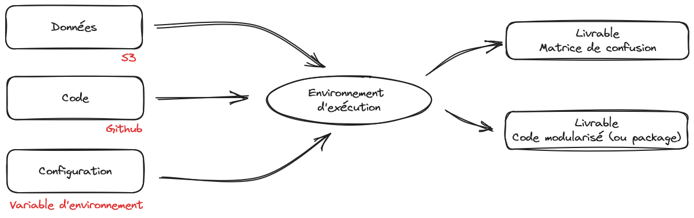
À présent, nous avons une version du projet qui est largement partageable.
Du moins en théorie, car la pratique est souvent plus compliquée : il y a fort à parier que si vous essayez d’exécuter votre projet sur un autre environnement (typiquement, votre ordinateur personnel), les choses ne se passent pas du tout comme attendu. Cela signifie qu’en l’état, le projet n’est pas portable : il n’est pas possible, sans modifications coûteuses, de l’exécuter dans un environnement différent de celui dans lequel il a été développé.
Dans cette troisième partie de notre travail vers la mise en production, nous allons voir comment normaliser l’environnement d’exécution afin de produire un projet portable. Autrement dit, nous n’allons plus nous contenter de modularité mais allons rechercher la portabilité. On sera alors tout proche de pouvoir mettre le projet en production.
On progressera dans l’échelle de la reproductibilité de la manière suivante:
- Environnements virtuels ;
- Créer un script shell qui permet, depuis un environnement minimal, de construire l’application de A à Z ;
- Images et conteneurs
Docker.
Nous allons repartir de l’application 8, c’est-à-dire d’un projet modulaire mais qui n’est pas, à strictement parler, un package (objet des applications optionnelles suivantes 9 et 10).
VSCode actif avec la configuration proposée dans l'application préliminaire, vous pouvez repartir de ce service:Et ensuite, après avoir clôné le dépôt
terminal
curl -sSL https://raw.githubusercontent.com/ensae-reproductibilite/website/refs/heads/main/chapters/applications/overwrite.sh -o update.sh && chmod +x update.sh
./update.sh appli82
rm -f update.sh- 1
- Récupérer le script de checkpoint
- 2
- Avancer à l’état à l’issue de l’application appli8
- 3
- Nettoyer derrière nous
Étape 1 : un environnement pour rendre le projet portable
Pour qu’un projet soit portable, il doit remplir deux conditions :
- Ne pas nécessiter de dépendances qui ne soient pas renseignées quelque part ;
- Ne pas proposer des dépendances inutiles, qui ne sont pas utilisées dans le cadre du projet.
Le prochain exercice vise à mettre ceci en oeuvre. Comme expliqué dans le chapitre portabilité, le choix du gestionnaire d’environnement est laissé libre. Il est recommandé de privilégier venv si vous découvrez la problématique de la portabilité.
En à peine un an uv s’est imposé comme la solution la plus populaire pour créer et gérer des environnements virtuels et gérer les dépendances Python.
uv pour gérer son environnement virtuel
- Après avoir installé
uv, exécuteruv init .et supprimer le fichierhello.pygénéré. Ouvrir lepyproject.tomlet observer sa structure. - Exécuter
uv pip freezeen ligne de commande et observer la (très) longue liste de package qu’il serait nécessaire de lister à la main si on voulait recréer un environnnement identique. - Utiliser la commande
uv initpuisuv syncpour créer un environnement virtuel par le biais d’uv(documentation). - Utiliser
lspour observer et comprendre le contenu du dossier.venv/bincréé paruv - Vérifier directement depuis la ligne de commande que
Pythonexécute bien une commande13 avec:
terminal
uv run python -c "print('Hello')"- Faire la même chose mais avec
import pandas as pd: comprenez-vous ce qu’il se passe ? Maintenant, essayeruv run main.pyen ligne de commande: comprenez-vous l’erreur ? - Installer de manière itérative les packages à partir d’
uv add(documentation) et en testant avecuv run main.py: avez-vous remarqué la vitesse à laquelle cela a été quand vous avez faituv add pandas? - Observer votre
pyproject.toml. Regarder le lockfileuv.lock. Générer automatiquement lerequirements.txten faisantuv pip compileet regarder celui-ci. - Ajouter le dossier
.venv/au.gitignores’il n’y est pas déjà pour ne pas ajouter ce dossier àGit. - Optionnel: créer un nouveau service avec le checkpoint de cette application, créer l’environnement virtuel avec la commande adéquate et tester l’application.
terminal
curl -sSL https://raw.githubusercontent.com/ensae-reproductibilite/website/refs/heads/main/chapters/applications/overwrite.sh -o update.sh && chmod +x update.sh
./update.sh appli112
rm -f update.sh- 1
- Récupérer le script de checkpoint
- 2
- Avancer à l’état à l’issue de l’application appli11
- 3
- Nettoyer derrière nous
venv est l’approche historique pour gérer des environnements virtuels. Nous avons en fait implicitement déjà commencé à aller vers cette direction en créant un fichier requirements.txt.
venv
- Exécuter
pip freezeen ligne de commande et observer la (très) longue liste de packages - Créer l’environnement virtuel
titanicen s’inspirant de la documentation officielle14 ou du chapitre dédié - Utiliser
lspour observer et comprendre le contenu du dossiertitanic/bininstallé - Activer l’environnement et vérifier l’installation de
Pythonmaintenant utilisée par votre machine - Vérifier directement depuis la ligne de commande que
Pythonexécute bien une commande15 avec:
terminal
python -c "print('Hello')"- Faire la même chose mais avec
import pandas as pd - Installer les packages à partir du
requirements.txt. Tester à nouveauimport pandas as pdpour comprendre la différence. - Exécuter
pip freezeet comprendre la différence avec la situation précédente. - Vérifier que le script
main.pyfonctionne bien. Sinon ajouter les packages manquants dans lerequirements.txtet reprendre de manière itérative à partir de la question 7. - Ajouter le dossier
titanic/au.gitignorepour ne pas ajouter ce dossier àGit.
Aide pour la question 4
Après l’activation, vous pouvez vérifier quel python est utilisé de cette manière
terminal
which pythonterminal
curl -sSL https://raw.githubusercontent.com/ensae-reproductibilite/website/refs/heads/main/chapters/applications/overwrite.sh -o update.sh && chmod +x update.sh
./update.sh appli11a2
rm -f update.sh- 1
- Récupérer le script de checkpoint
- 2
- Avancer à l’état à l’issue de l’application appli11a
- 3
- Nettoyer derrière nous
Étape 2: construire l’environnement de notre application via un script shell
Les environnements virtuels permettent de mieux spécifier les dépendances de notre projet, mais ne permettent pas de garantir une portabilité optimale. Pour cela, il faut recourir à la technologie des conteneurs. L’idée est de construire une machine, en partant d’une base quasi-vierge, qui permette de reproduire étape par étape l’environnement nécessaire au bon fonctionnement de notre projet. C’est le principe des conteneurs Docker .
Leur méthode de construction étant un peu difficile à prendre en main au début, nous allons passer par une étape intermédiaire afin de bien comprendre le processus de production.
- Nous allons d’abord créer un script
shell, c’est-à-dire une suite de commandesLinuxpermettant de construire l’environnement à partir d’une machine vierge ; - Nous transformerons celui-ci en
Dockerfiledans un deuxième temps. C’est l’objet de l’étape suivante.
- Créer un service
ubuntusur le SSP Cloud - Ouvrir un terminal
- Cloner le dépôt
- Se placer dans le dossier du projet avec
cd - Utiliser le script de checkpoint pour récupérer l’appli11.
- Via l’explorateur de fichiers, créer le fichier
install.shà la racine du projet avec le contenu suivant:
Script à créer sous le nom install.sh
install.sh
#!/usr/bin/env bash
# Ensure everything is installed
sudo apt-get -y update
sudo apt-get install -y python3-pip python3-venv curl
# Install uv
curl -LsSf https://astral.sh/uv/install.sh | sh
# Restore environment
uv sync- Changer les permissions sur le script pour le rendre exécutable
terminal
chmod +x install.sh- Exécuter le script depuis la ligne de commande et ajouter
uvauPATH
terminal
./install.sh
export PATH="$HOME/.local/bin:$PATH"- Vérifier que le script
main.pyfonctionne correctement dans l’environnement virtuel créé
terminal
uv run main.pyterminal
curl -sSL https://raw.githubusercontent.com/ensae-reproductibilite/website/refs/heads/main/chapters/applications/overwrite.sh -o update.sh && chmod +x update.sh
./update.sh appli122
rm -f update.sh- 1
- Récupérer le script de checkpoint
- 2
- Avancer à l’état à l’issue de l’application appli12
- 3
- Nettoyer derrière nous
Étape 3: conteneuriser l’application avec Docker
Cette application nécessite l’accès à une version interactive de Docker. Il n’y a pas beaucoup d’instances en ligne disponibles.
Nous proposons deux solutions:
- Installer
Dockersur sa machine ; - Se rendre sur l’environnement bac à sable Play with Docker
Sinon, elle peut être réalisée en essai-erreur par le biais des services d’intégration continue de Github ou Gitlab . Néanmoins, nous présenterons l’utilisation de ces services plus tard, dans la prochaine partie.
Maintenant qu’on sait que ce script préparatoire fonctionne, on va le transformer en Dockerfile pour anticiper la mise en production. Comme la syntaxe Docker est légèrement différente de la syntaxe Linux classique (voir le chapitre portabilité), il va être nécessaire de changer quelques instructions mais ceci sera très léger.
On va tester le Dockerfile dans un environnement bac à sable pour ensuite pouvoir plus facilement automatiser la construction de l’image Docker.
Docker
Se placer dans un environnement avec Docker, par exemple Play with Docker
Création du Dockerfile
Dans le terminal
Linux, cloner votre dépôtGithubRepartir du dernier checkpoint mis à disposition (ou de votre dernière version si vous la préférez).
Créer via la ligne de commande un fichier texte vierge nommé
Dockerfile(la majuscule au début du mot est importante)
Commande pour créer un Dockerfile vierge depuis la ligne de commande
terminal
touch Dockerfile- Ouvrir ce fichier via un éditeur de texte et copier le contenu suivant dedans:
Premier Dockerfile
terminal
FROM ubuntu:22.04
# Install Python
RUN apt-get -y update && \
apt-get install -y python3-pip curl
# Install uv
RUN curl -LsSf https://astral.sh/uv/install.sh | sh
ENV PATH="/root/.local/bin/:$PATH"
# Install project dependencies
COPY pyproject.toml .
RUN uv sync
CMD ["uv", "run", "main.py"]Construire (build) l’image
- Utiliser
docker buildpour créer une image avec le tagmy-python-app
terminal
docker build . -t my-python-app- Vérifier les images dont vous disposez. Vous devriez avoir un résultat proche de celui-ci :
terminal
docker imagesREPOSITORY TAG IMAGE ID CREATED SIZE
my-python-app latest e83445c6fb5a 12 seconds ago 978MBTester l’image: découverte du cache
L’étape de build a fonctionné: une image a été construite.
Mais fait-elle effectivement ce que l’on attend d’elle ?
Pour le savoir, il faut passer à l’étape suivante, l’étape de run.
terminal
docker run -it my-python-apppython3: can't open file '/~/titanic/main.py': [Errno 2] No such file or directoryLe message d’erreur est clair : Docker ne sait pas où trouver le fichier main.py. D’ailleurs, il ne connait pas non plus les autres fichiers de notre application qui sont nécessaires pour faire tourner le code, par exemple le dossier src.
- Avant l’étape
CMD, copier les fichiers nécessaires sur l’image afin que l’application dispose de tous les éléments nécessaires pour être en mesure de fonctionner.
Nouveau Dockerfile
terminal
FROM ubuntu:22.04
# Install Python
RUN apt-get -y update && \
apt-get install -y python3-pip curl
# Install uv
RUN curl -LsSf https://astral.sh/uv/install.sh | sh
ENV PATH="/root/.local/bin/:$PATH"
# Install project dependencies
COPY pyproject.toml .
RUN uv sync
COPY main.py .
COPY src ./src
CMD ["uv", "run", "main.py"]Refaire tourner l’étape de
buildRefaire tourner l’étape de
run. Il vous manque la variable d’environnementJETON_APIqui n’a pas été insérée dans le conteneur pour ne pas prendre le risque de la révéler. Il va falloir l’introduire au moment du run avec la commande suivante:
docker run -e JETON_API='' -it my-python-app- A ce stade, l’application doit tourner de A à Z 🎉. Félicitations, vous avez créé votre première application reproductible !
Ici, le cache permet d’économiser beaucoup de temps. Par besoin de refaire tourner toutes les étapes, Docker agit de manière intelligente en faisant tourner uniquement les étapes qui ont changé.
terminal
curl -sSL https://raw.githubusercontent.com/ensae-reproductibilite/website/refs/heads/main/chapters/applications/overwrite.sh -o update.sh && chmod +x update.sh
./update.sh appli132
rm -f update.sh- 1
- Récupérer le script de checkpoint
- 2
- Avancer à l’état à l’issue de l’application appli13
- 3
- Nettoyer derrière nous
Partie 4 : automatisation avec l’intégration continue
VSCode actif avec la configuration proposée dans l'application préliminaire, vous pouvez repartir de ce service:Et ensuite, après avoir clôné le dépôt
terminal
curl -sSL https://raw.githubusercontent.com/ensae-reproductibilite/website/refs/heads/main/chapters/applications/overwrite.sh -o update.sh && chmod +x update.sh
./update.sh appli132
rm -f update.sh- 1
- Récupérer le script de checkpoint
- 2
- Avancer à l’état à l’issue de l’application appli13
- 3
- Nettoyer derrière nous
Imaginez que vous êtes au restaurant et qu’on ne vous serve pas le plat mais seulement la recette et que, de plus, on vous demande de préparer le plat chez vous avec les ingrédients dans votre frigo. Vous seriez quelque peu déçu. En revanche, si vous avez goûté au plat, que vous êtes un réel cordon bleu et qu’on vous donne la recette pour refaire ce plat ultérieurement, peut-être que vous appréciriez plus.
Cette analogie illustre l’enjeu de définir le public cible et ses attentes afin de fournir un livrable adapté. Une image Docker est un livrable qui n’est pas forcément intéressant pour tous les publics. Certains préféreront avoir un plat bien préparé qu’une recette ; certains apprécieront avoir une image Docker mais d’autres ne seront pas en mesure de construire celle-ci ou ne sauront pas la faire fonctionner. Une image Docker est plus souvent un moyen pour faciliter la mise en service d’une production qu’une fin en soi.
Nous allons donc proposer plusieurs types de livrables plus classiques par la suite. Ceux-ci correspondront mieux aux attendus des publics utilisateurs de services construits à partir de techniques de data science. Docker est néanmoins un passage obligé car l’ensemble des types de livrables que nous allons explorer reposent sur la standardisation permise par les conteneurs.
Cette approche nous permettra de quitter le domaine de l’artisanat pour s’approcher d’une industrialisation de la mise à disposition de notre projet. Ceci va notamment nous amener à mettre en oeuvre l’approche pragmatique du DevOps qui consiste à intégrer dès la phase de développement d’un projet les contraintes liées à sa mise à disposition au public cible (cette approche est détaillée plus amplement dans le chapitre sur la mise en production).
L’automatisation et la mise à disposition automatisée de nos productions sera faite progressivement, au cours des prochaines parties. Tous les projets n’ont pas vocation à aller aussi loin dans ce domaine. L’opportunité doit être comparée aux coûts humains et financiers de leur mise en oeuvre et de leur cycle de vie. Avant de faire une production en série de nos modèles, nous allons déjà commencer par automatiser quelques tests de conformité de notre code. On va ici utiliser l’intégration continue pour deux objectifs distincts:
- la mise à disposition de l’image
Docker; - la mise en place de tests automatisés de la qualité du code sur le modèle de notre
linterprécédent.
Nous allons utiliser Github Actions pour cela. Il s’agit de serveurs standardisés mis à disposition gratuitement par Github . Gitlab , l’autre principal acteur du domaine, propose des services similaires. L’implémentation est légèrement différente mais les principes sont identiques.
VSCode actif avec la configuration proposée dans l'application préliminaire, vous pouvez repartir de ce service:Et ensuite, après avoir clôné le dépôt
terminal
curl -sSL https://raw.githubusercontent.com/ensae-reproductibilite/website/refs/heads/main/chapters/applications/overwrite.sh -o update.sh && chmod +x update.sh
./update.sh appli132
rm -f update.sh- 1
- Récupérer le script de checkpoint
- 2
- Avancer à l’état à l’issue de l’application appli13
- 3
- Nettoyer derrière nous
Étape 1: mise en place de tests automatisés
Avant d’essayer de mettre en oeuvre la création de notre image Docker de manière automatisée, nous allons présenter la logique de l’intégration continue en testant de manière automatisée notre script main.py.
Pour cela, nous allons partir de la structure proposée dans l’action officielle. La documentation associée est ici. Des éléments succincts de présentation de la logique déclarative des actions Github sont disponibles dans le chapitre sur la mise en production. Néanmoins, la meilleure école pour comprendre le fonctionnement de celles-ci est de parcourir la documentation du service et d’observer les actions Github mises en oeuvre par vos projets favoris, celles-ci seront fort instructives !
A partir de l’exemple présent dans la documentation officielle de Github , on a déjà une base de départ qui peut être modifiée. Les questions suivantes permettront d’automatiser les tests et le diagnostic qualité de notre code16
- Créer un fichier
.github/workflows/test.yamlavec le contenu de l’exemple de la documentation - Avec l’aide de la documentation, introduire une étape d’installation des dépendances. Vous inspirer des scripts précédents, ou de l’action
Githubdéveloppée par Astral, la startup derrièreuv, pour cela. - Créer une étape utilisant
pylintpour évaluer la qualité formelle du code. Ajouter l’argument--fail-under=5pour renvoyer une erreur en cas de note trop basse17 - Committer ce fichier et corriger de manière itérative s’il y a une erreur en allant voir votre test automatisé dans l’onglet
Actionsde votre dépôt surGithub.
Passons maintenant à la mise en production de notre code principal.
- Utiliser une étape appelant notre application en ligne de commande (
python main.py) pour tester que la matrice de confusion s’affiche bien. - En toute vraisemblance vous avez une erreur à ce niveau. Créer un secret stockant une valeur du
JETON_API. - (optionnel): Créer un artefact à partir du fichier de log que vous créez dans
main.py
terminal
curl -sSL https://raw.githubusercontent.com/ensae-reproductibilite/website/refs/heads/main/chapters/applications/overwrite.sh -o update.sh && chmod +x update.sh
./update.sh appli142
rm -f update.sh- 1
- Récupérer le script de checkpoint
- 2
- Avancer à l’état à l’issue de l’application appli14
- 3
- Nettoyer derrière nous
Maintenant, nous pouvons observer que l’onglet Actions s’est enrichi. Chaque commit va entraîner une série d’actions automatisées.
Si l’une des étapes échoue, ou si la note de notre projet est mauvaise, nous aurons une croix rouge (et nous recevrons un mail). On pourra ainsi détecter, en développant son projet, les moments où on dégrade la qualité du script afin de la rétablir immédiatemment.
Étape 2: Automatisation de la livraison de l’image Docker
Maintenant, nous allons automatiser la mise à disposition de notre image sur DockerHub (le lieu de partage des images Docker). Cela facilitera sa réutilisation mais aussi des valorisations ultérieures.
Là encore, nous allons utiliser une série d’actions pré-configurées.
Pour que Github puisse s’authentifier auprès de DockerHub, il va falloir d’abord interfacer les deux plateformes. Pour cela, nous allons utiliser un jeton (token) DockerHub que nous allons mettre dans un espace sécurisé associé à votre dépôt Github.
- Se rendre sur https://hub.docker.com/ et créer un compte. Il est recommandé d’associer ce compte à votre compte
Github. - Créer un dépôt public
application - Aller dans les paramètres de votre compte et cliquer, à gauche, sur
Security - Créer un jeton personnel d’accès, ne fermez pas l’onglet en question, vous ne pouvez voir sa valeur qu’une fois.
- Dans le dépôt
Githubde votre projet, cliquer sur l’ongletSettingset cliquer, à gauche, surSecrets and variablespuis dans le menu déroulant en dessous surActions. Sur la page qui s’affiche, aller dans la sectionRepository secrets - Créer un jeton
DOCKERHUB_TOKENà partir du jeton que vous aviez créé surDockerhub. Valider - Créer un deuxième secret nommé
DOCKERHUB_USERNAMEayant comme valeur le nom d’utilisateur que vous avez créé surDockerhub
A ce stade, nous avons donné les moyens à Github de s’authentifier avec notre identité sur Dockerhub. Il nous reste à mettre en oeuvre l’action en s’inspirant de la documentation officielle. On ne va modifier que trois éléments dans ce fichier. Effectuer les actions suivantes:
Docker
- En s’inspirant de ce template, créer le fichier
.github/workflows/prod.ymlqui va build et push l’image sur leDockerHub. Il va être nécessaire de changer légèrement ce modèle :- Retirer la condition restrictive sur les commits pour lesquels sont lancés cette automatisation. Pour cela, remplacer le contenu de
onde sorte à avoir
on: push: branches: - main - dev- Changer le tag à la fin pour mettre
username/application:latestoùusernameest le nom d’utilisateur surDockerHub;
- Retirer la condition restrictive sur les commits pour lesquels sont lancés cette automatisation. Pour cela, remplacer le contenu de
- Faire un
commitet unpushde ces fichiers
Comme on est fier de notre travail, on va afficher ça avec un badge sur le README (partie optionnelle).
- Se rendre dans l’onglet
Actionset cliquer sur une des actions listées. - En haut à droite, cliquer sur
... - Sélectionner
Create status badge - Récupérer le code
Markdownproposé - Copier dans votre
README.mdle code markdown proposé
Créer le badge
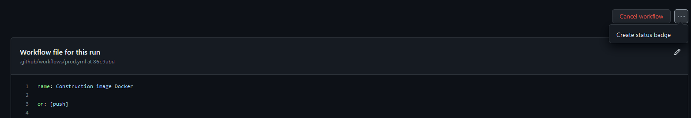
Maintenant, il nous reste à tester notre application dans l’espace bac à sable ou en local, si Docker est installé.
- Se rendre sur l’environnement bac à sable Play with Docker ou dans votre environnement
Dockerde prédilection. - Récupérer et lancer l’image :
terminal
docker run -e JETON_API="" -it username/application:latest🎉 L’ensemble des messages loggués doivent s’afficher ! Vous avez grandement facilité la réutilisation de votre image.
terminal
curl -sSL https://raw.githubusercontent.com/ensae-reproductibilite/website/refs/heads/main/chapters/applications/overwrite.sh -o update.sh && chmod +x update.sh
./update.sh appli152
rm -f update.sh- 1
- Récupérer le script de checkpoint
- 2
- Avancer à l’état à l’issue de l’application appli15
- 3
- Nettoyer derrière nous
Partie 5: déployer une application en production
Nous avons automatisé les étapes intermédiaires de notre projet. Néanmoins nous n’avons pas encore réfléchi à la valorisation à mettre en oeuvre pour notre projet. On va supposer que notre projet s’adresse à des data scientists mais aussi à une audience moins technique. Pour ces premiers, nous pourrions nous contenter de valorisations techniques, comme des API, mais pour ces derniers il est conseillé de privilégier des formats plus user friendly.
Afin de faire le parallèle avec les parcours possibles pour l’évaluation, nous allons proposer deux valorisations :
- Une API facilitant la réutilisation du modèle en “production” ;
- Un site web statique exploitant cette API pour exposer les prédictions à une audience moins technique.
La solution que nous allons proposer pour les sites statiques, Quarto associé à Github Pages, peut être utilisée dans le cadre des parcours “rapport reproductible” ou “dashboard / application interactive”.
Pour ce dernier parcours, d’autres approches techniques sont néanmoins possibles, comme Streamlit. Celles-ci sont plus exigeantes sur le plan technique puisqu’elles nécessitent de mettre en production sur des serveurs conteuneurisés (comme la mise en production de l’API) là où le site statique ne nécessite qu’un serveur web, mis à disposition gratuitement par Github.
La distinction principale entre ces deux approches est qu’elles s’appuient sur des serveurs différents. Un site statique repose sur un serveur web là où Streamlit s’appuie sur serveur classique en backend. La différence principale entre ces deux types de serveurs réside principalement dans leur fonction et leur utilisation:
- Un serveur web est spécifiquement conçu pour stocker, traiter et livrer des pages web aux clients. Cela inclut des fichiers HTML, CSS, JavaScript, images, etc. Les serveurs web écoutent les requêtes HTTP/HTTPS provenant des navigateurs des utilisateurs et y répondent en envoyant les données demandées.
- Un serveur backend classique est conçu pour effectuer des opérations en réponse à un front, en l’occurrence une page web. Dans le contexte d’une application
Streamlit, il s’agit d’un serveur avec l’environnementPythonad hoc pour exécuter le code nécessaire à répondre à toute action d’un utilisateur de l’appliacation.
Étape 1: développer une API en local
Le premier livrable devenu classique dans un projet impliquant du machine learning est la mise à disposition d’un modèle par le biais d’une API (voir chapitre sur la mise en production). Le framework FastAPI va permettre de rapidement transformer notre application Python en une API fonctionnelle.
Installer
fastAPI,uvicornetskops18. N’oubliez pas que nous n’utilisons pluspip installpour cela.
Renommer le fichier
main.pyentrain.py.Dans ce script, ajouter une sauvegarde du modèle après l’avoir entraîné, en suivant la documentation de Scikit.
Faire tourner
train.pypour enregistrer en local votre modèle de production. Optionnel: tester la lecture du modèle depuis un notebook et une inférence sur un exemple inventé.Ajouter
model.skopsau.gitignorecarGitn’est pas fait pour ce type de fichiers.Modifier les appels à
main.pydans votreDockerfileet vos actionsGithubsous peine d’essuyer des échecs lors de vos actionsGithubaprès le prochain push.
Nous allons maintenant passer au développement de l’API. Comme découvrir FastAPI n’est pas l’objet de cet enseignement, nous donnons directement le modèle pour créer l’API. Si vous désirez tester de vous-mêmes, vous pouvez créer votre fichier sans vous référer à l’exemple.
- Créer le fichier
app/api.pypermettant d’initialiser l’API:
Fichier app/api.py
app/api.py
"""A simple API to expose our trained RandomForest model for Tutanic survival."""
from fastapi import FastAPI
import skops.io as sio
import pandas as pd
unknown_types = sio.get_untrusted_types(file="model.skops")
model = sio.load("model.skops", trusted=unknown_types)
app = FastAPI(
title="Prédiction de survie sur le Titanic",
description="Application de prédiction de survie sur le Titanic 🚢 <br>Une version par API pour faciliter la réutilisation du modèle 🚀"
+ '<br><br><img src="https://media.vogue.fr/photos/5faac06d39c5194ff9752ec9/1:1/w_2404,h_2404,c_limit/076_CHL_126884.jpg" width="200">',
)
@app.get("/", tags=["Welcome"])
def show_welcome_page():
"""
Show welcome page with model name and version.
"""
return {
"Message": "API de prédiction de survie sur le Titanic",
"Model_name": "Titanic ML",
"Model_version": "0.1",
}
@app.get("/predict", tags=["Predict"])
async def predict(
sex: str = "female", age: float = 29.0, fare: float = 16.5, embarked: str = "S"
) -> str:
""" """
df = pd.DataFrame(
{
"Sex": [sex],
"Age": [age],
"Fare": [fare],
"Embarked": [embarked],
}
)
prediction = int(model.predict(df)[0])
prediction = "Survived 🎉" if prediction == 1 else "Dead ⚰️"
return prediction- Déployer l’API en local avec la commande suivante.
terminal
uv run uvicorn app.api:app- Observer l’output dans la console. Notre API est désormais déployée en local, plus précisément sur le localhost, un serveur web local déployé à l’adresse
http://127.0.0.1. L’API est déployée sur le port par défaut utilisé paruvicorn, soit le port8000. - Sans fermer le terminal précédent, ouvrir un nouveau terminal. Tester le bon déploiement de l’API en requêtant son endpoint. Pour cela, on envoie une simple requête
GETsur le endpoint via l’utilitairecurl.
terminal
curl "http://127.0.0.1:8000"Si tout s’est bien passé, on devrait avoir récupéré une réponse (au format
JSON) affichant le message d’accueil de notre API. Dans ce cas, on va pouvoir requêter notre modèle via l’API.En vous inspirant du code qui définit le endpoint
/predictdans le code de l’API (app/api.py), effectuer sur le même modèle que la requête précédente une requête qui calcule la survie d’une femme de32ans qui aurait payé son billet16dollars et aurait embarqué au portS.
Solution
terminal
curl "http://127.0.0.1:8000/predict?sex=female&age=32&fare=16&embarked=S"- Toujours sans fermer le terminal qui déploie l’API, ouvrir une session
Pythonet tester une requête avec des paramètres différents, avec la librairierequests:
Solution
import requests
URL = "http://127.0.0.1:8000/predict?sex=male&age=25&fare=80&embarked=S"
requests.get(URL).json()- Une fois que l’API a été testée, vous pouvez fermer l’application en effectuant CTRL+C depuis le terminal où elle est lancée.
terminal
curl -sSL https://raw.githubusercontent.com/ensae-reproductibilite/website/refs/heads/main/chapters/applications/overwrite.sh -o update.sh && chmod +x update.sh
./update.sh appli162
rm -f update.sh- 1
- Récupérer le script de checkpoint
- 2
- Avancer à l’état à l’issue de l’application appli16
- 3
- Nettoyer derrière nous
Étape 2: déployer l’API de manière manuelle
A ce stade, nous avons déployé l’API seulement localement, dans le cadre d’un terminal qui tourne en arrière-plan. C’est une mise en production manuelle, pas franchement pérenne. Ce mode de déploiement est très pratique pour la phase de développement, afin de s’assurer que l’API fonctionne comme attendue. Pour pérenniser la mise en production, on va éliminer l’aspect artisanal de celle-ci.
Il est temps de passer à l’étape de déploiement, qui permettra à notre API d’être accessible, à tout moment, via une URL sur le web et d’avoir un serveur, en arrière plan, qui effectuera les opérations pour répondre à une requête. Pour se faire, on va utiliser les possibilités offertes par Kubernetes, technologie sur laquelle est basée l’infrastructure SSP Cloud.
SSPCloud ? (une idée saugrenue mais sait-on jamais)
Les exemples à venir peuvent très bien être répliqués sur n’importe quel cloud provider qui propose une solution d’ordonnancement type Kubernetes. Il existe également des fournisseurs de services dédiés, généralement associés à une implémentation, par exemple pour Streamlit. Ces services sont pratiques si on n’a pas le choix mais il faut garder à l’esprit qu’ils peuvent constituer un mur de la production car vous ne contrôlez pas l’environnement en question, qui peut se distinguer de votre environnement de développement.
Et si jamais vous voulez avoir un SSPCloud dans votre entreprise c’est possible: le logiciel Onyxia sur lequel repose cette infrastructure est open source et est, déjà, réimplémenté par de nombreux acteurs. Pour bénéficier d’un accompagnement dans la création d’une telle infrastructure, rdv sur le Slack du projet Onyxia:

- Créer un script
app/run.shà la racine du projet qui lance le scripttrain.pypuis déploie localement l’API. Attention, quand on se place dans le monde des conteneurs et plus généralement des infrastructures cloud, on ne va plus déployer sur le localhost mais sur “l’ensemble des interfaces réseaux”. Lorsqu’on déploie une application web dans un conteneur, on va donc toujours devoir spécifier un host valant0.0.0.0(et non plus localhost ou, de manière équivalente,http://127.0.0.1).
Fichier app/run.sh
api/run.sh
#/bin/bash
uv run train.py
uv run uvicorn app.api:app --host "0.0.0.0"Donner au script
app/run.shdes permissions d’exécution :chmod +x app/run.shAjouter
COPY app ./appau Dockerfile pour avoir les fichiers nécessaires au lancement dans l’API dans l’imageChanger l’instruction
CMDduDockerfilepour exécuter le scriptapp/run.shau lancement du conteneur (CMD ["bash", "-c", "./app/run.sh"])Commit et push les changements
Une fois le CI terminé, vérifier que le nouveau tag
latesta été pushé sur le DockerHub. Récupérer la nouvelle image dans votre environnement de test deDockeret vérifier que l’API se déploie correctement.
Tester l’image sur le SSP Cloud
Lancer dans un terminal la commande suivante pour pull l’application depuis le DockerHub et la déployer en local :
terminal
kubectl run -it api-ml --env JETON_API='' --image=votre_compte_docker_hub/application:latest
kubectl logs api-mlSi tout se passe correctement, vous devriez observer dans la console un output similaire au déploiement en local de la partie précédente. Cette fois, l’application est déployée à l’adresse
http://0.0.0.0:8000. On ne peut néanmoins pas directement l’exploiter à ce stade : si le conteneur de l’API est déployé, il manque un ensemble de ressources Kubernetes qui permettent de déployer proprement l’API à tout utilisateur. C’est l’objet de l’application suivante !Si vous avez testé
kubectl get pods, fairekubectl delete pod api-mlpour nettoyer le serveur.
terminal
curl -sSL https://raw.githubusercontent.com/ensae-reproductibilite/website/refs/heads/main/chapters/applications/overwrite.sh -o update.sh && chmod +x update.sh
./update.sh appli172
rm -f update.sh- 1
- Récupérer le script de checkpoint
- 2
- Avancer à l’état à l’issue de l’application appli17
- 3
- Nettoyer derrière nous
Nous avons préparé la mise à disposition de notre API mais à l’heure actuelle elle n’est pas accessible de manière aisée car il est nécessaire de lancer manuellement une image Docker pour pouvoir y accéder. Ce type de travail est la spécialité de Kubernetes que nous allons utiliser pour gérer la mise à disposition de notre API.
Cette partie nécessite d’avoir à disposition une infrastructure cloud.
Créer un dossier
deploymentà la racine du projet qui va contenir les fichiers de configuration nécessaires pour déployer sur un clusterKubernetesEn vous inspirant de la documentation, y ajouter un premier fichier
deployment.yamlqui va spécifier la configuration du Pod à lancer sur le cluster
Fichier deployment/deployment.yaml
deployment/deployment.yaml
apiVersion: apps/v1
kind: Deployment
metadata:
name: titanic-deployment
labels:
app: titanic
spec:
replicas: 1
selector:
matchLabels:
app: titanic
template:
metadata:
labels:
app: titanic
spec:
containers:
- name: titanic
image: votre_compte_docker_hub/application:latest
ports:
- containerPort: 8000
1. Remplacer ici par votre compte Docker- En vous inspirant de la documentation, y ajouter un second fichier
service.yamlqui va créer une ressourceServicepermettant de donner une identité fixe auPodprécédemment créé au sein du cluster
Fichier deployment/service.yaml
deployment/service.yaml
apiVersion: v1
kind: Service
metadata:
name: titanic-service
spec:
selector:
app: titanic
ports:
- protocol: TCP
port: 80
targetPort: 8000- En vous inspirant de la documentation, y ajouter un troisième fichier
ingress.yamlqui va créer une ressourceIngresspermettant d’exposer le service via une URL en dehors du cluster
Fichier deployment/ingress.yaml
deployment/ingress.yaml
apiVersion: networking.k8s.io/v1
kind: Ingress
metadata:
name: titanic-ingress
spec:
ingressClassName: nginx
tls:
- hosts:
1 - votre_nom_d_application.lab.sspcloud.fr
rules:
2 - host: votre_nom_d_application.lab.sspcloud.fr
http:
paths:
- path: /
pathType: Prefix
backend:
service:
name: titanic-service
port:
number: 80- 1
-
Mettez l’URL auquel vous voulez exposer votre service. Sur le modèle de
titanic.lab.sspcloud.fr(mais ne tentez pas celui-là, il est déjà pris 😃) - 2
- Mettre cette même URL ici aussi
Appliquer ces fichiers de configuration sur le cluster :
kubectl apply -f deployment/Vérifier le bon déploiement de l’application (c’est à dire du
Podqui encapsule le conteneur) à l’aide de la commandekubectl get pods. Regarder les logs aveckubectl logs -l app=titanic -f --tail=200. Comprenez vous la source de l’erreur ?Créer un secret pour votre jeton d’API. Il y a plusieurs manières de faire. En l’occurrence, vous pouvez utiliser cette commande
terminal
kubectl create secret generic api-jeton --from-literal=JETON_API='mon_super_jeton'- Mettre à jour votre deployment pour indiquer à Kubernetes (le seul avec vous à connaître la valeur derrière le jeton):
#| filename: "deployment/deployment.yaml"
apiVersion: apps/v1
kind: Deployment
metadata:
name: titanic-deployment
labels:
app: titanic
spec:
replicas: 1
selector:
matchLabels:
app: titanic
template:
metadata:
labels:
app: titanic
spec:
containers:
- name: titanic
1 image: votre_compte_docker_hub/application:latest
ports:
- containerPort: 8000
env:
- name: JETON_API
valueFrom:
secretKeyRef:
name: api-jeton
key: JETON_API- 1
- Remplacer ici par votre compte Docker
Si tout a correctement fonctionné, vous devriez pouvoir accéder depuis votre navigateur à l’API à l’URL spécifiée dans le fichier
deployment/ingress.yaml. Par exemplehttps://api-titanic-test.lab.sspcloud.fr/si vous avez mis celui-ci plus tôt.Explorer le swagger de votre API à l’adresse
https://api-titanic-test.lab.sspcloud.fr/docs. Il s’agit d’une page de documentation standard à la plupart des APIs, bien utiles pour tester des requêtes de manière interactive. Regarder les logs avant/après avoir testé les exemples interactifs d’utilisation.
terminal
curl -sSL https://raw.githubusercontent.com/ensae-reproductibilite/website/refs/heads/main/chapters/applications/overwrite.sh -o update.sh && chmod +x update.sh
./update.sh appli182
rm -f update.sh- 1
- Récupérer le script de checkpoint
- 2
- Avancer à l’état à l’issue de l’application appli18
- 3
- Nettoyer derrière nous
On peut remarquer quelques voies d’amélioration de notre approche qui seront ultérieurement traitées:
- L’entraînement du modèle est ré-effectué à chaque lancement d’un nouveau conteneur. On relance donc autant de fois un entraînement qu’on déploie de conteneurs pour répondre à nos utilisateurs. Ce sera l’objet de la partie MLOps de fiabiliser et optimiser cette partie du pipeline.
- il est nécessaire de (re)lancer manuellement
kubectl apply -f deployment/à chaque changement de notre code. Autrement dit, lors de cette application, on a amélioré la fiabilité du lancement de notre API mais un lancement manuel est encore indispensable. Comme dans le reste de ce cours, on va essayer d’éviter un geste manuel pouvant être source d’erreur en privilégiant l’automatisation et l’archivage dans des scripts. C’est l’objet de la prochaine étape.
Etape 3: automatiser le déploiement (déploiement en continu)
Docker utilisée
A partir de maintenant, il est nécessaire de clarifier la branche principale sur laquelle nous travaillons. Toutes les prochaines applications supposeront que vous travaillez depuis la branche main. Si vous avez changé de branche, vous pouvez fusionner celle-ci à main.
Si vous avez utilisé un tag pour sauter une ou plusieurs étapes, il va être nécessaire de se placer sur une branche car vous êtes en head detached. Si vous avez utilisé les scripts automatisés de checkpoint, cette gymnastique a été faite pour vous.
Les prochaines applications vont également nécessiter d’utiliser une image Docker. Si vous avez suivi de manière linéaire cette application, votre image Docker devrait exister depuis l’application 15 si vous avez pushé votre dépôt à ce moment là.
Néanmoins, si vous n’avez pas fait cette application, vous pouvez utiliser le checkpoint de l’application 18 et faire un git push origin main --force (à ne pas reproduire sur vos projets!) qui devrait déclencher les opérations côté Github pour construire et livrer votre image Docker. Cela nécessite quelques opérations de votre côté, notamment la création d’un token Dockerhub à renseigner en secret Github. Pour vous refraîchir la mémoire sur le sujet, vous pouvez retourner consulter l’application 15.
Qu’est-ce qui peut déclencher une évolution nécessitant de mettre à jour l’ensemble de notre processus de production ?
Regardons à nouveau notre pipeline:
Les inputs de notre pipeline sont donc:
- La configuration. Ici, on peut considérer que notre
.envde configuration, les secrets renseignés àGithubou encore lerequirements.txtrelèvent de cette catégorie ; - Les données. Nos données sont statiques et n’ont pas vocation à évoluer. Si c’était le cas, il faudrait en tenir compte dans notre automatisation (Note 1). ;
- Le code. C’est l’élément principal qui évolue chez nous. Idéalement, on veut automatiser le processus au maximum en faisant en sorte qu’à chaque mise à jour de notre code (un push sur
Github), les étapes ultérieures (production de l’imageDocker, etc.) se lancent. Néanmoins, on veut aussi éviter qu’une erreur puisse donner lieu à une mise en production non-fonctionnelle, on va donc maintenir une action manuelle minimale comme garde-fou.
Ici, nous nous plaçons dans le cas simple où les données brutes reçues sont figées. Ce qui peut changer est la manière dont on constitue nos échantillons train/test. Il sera donc utile de logguer les données en question par le biais de MLFlow. Mais il n’est pas nécessaire de versionner les données brutes.
Si celles-ci évoluaient, il pourrait être utile de versionner les données, à la manière dont on le fait pour le code. Git n’est pas l’outil approprié pour cela. Parmi les outils populaires de versionning de données, bien intégrés avec S3, il y a, sur le SSPCloud, lakefs.
Pour automatiser au maximum la mise en production, on va utiliser un nouvel outil : ArgoCD. Ainsi, au lieu de devoir appliquer manuellement la commande kubectl apply à chaque modification des fichiers de déploiement (présents dans le dossier kubernetes/), c’est l’opérateur ArgoCD, déployé sur le cluster, qui va détecter les changements de configuration du déploiement et les appliquer automatiquement.
C’est l’approche dite GitOps : le dépôt Git du déploiement fait office de source de vérité unique de l’état voulu de l’application, tout changement sur ce dernier doit donc se répercuter immédiatement sur le déploiement effectif.
Lancer un service
ArgoCDsur leSSPClouddepuis la pageMes services(catalogueAutomation). Laisser les configurations par défaut.Sur
GitHub, créer un dépôtapplication-deploymentqui va servir de dépôt GitOps, c’est à dire un dépôt qui spécifie le paramétrage du déploiement de votre application.Ajouter un dossier
deploymentà votre dépôtGitOps, dans lequel on mettra les trois fichiers de déploiement qui permettent de déployer notre application surKubernetes(deployment.yaml,service.yaml,ingress.yaml).A la racine de votre dépôt
GitOps, créez un fichierapplication.ymlavec le contenu suivant, en prenant bien soin de modifier les lignes annotées avec des informations pertinentes :application.yaml
apiVersion: argoproj.io/v1alpha1 kind: Application metadata: name: ensae-mlops spec: project: default source: 1 repoURL: https://github.com/<your_github_username>/application-deployment.git 2 targetRevision: main 3 path: deployment destination: server: https://kubernetes.default.svc 4 namespace: user-<your_sspcloud_username> syncPolicy: automated: selfHeal: true- 1
-
L’URL de votre dépôt
Githubfaisant office de dépôtGitOps. - 2
- La branche à partir de laquelle vous déployez.
- 3
-
Le nom du dossier contenant vos fichiers de déploiement
Kubernetes. - 4
-
Votre namespace
Kubernetes. Sur le SSPCloud, cela prend la formeuser-${username}.
Pousser sur
Githuble dépôtGitOps.Dans
ArgoCD, cliquez surNew ApppuisEdit as a YAML. Copiez-collez le contenu deapplication.ymlet cliquez surCreate.Observez dans l’interface d’
ArgoCDle déploiement progressif des ressources nécessaires à votre application sur le cluster. Joli non ?Vérifiez que votre API est bien déployée en utilisant l’URL définie dans le fichier
ingress.yml.Supprimer du code applicatif le dossier
deploymentpuisque c’est maintenant votre dépôt de déploiement qui le contrôle.Indiquer dans le
README.mdque le déploiement de votre application (dont vous pouvez mettre l’URL dans le README) est contrôlé par un autre dépôt.
Si cela a fonctionné, vous devriez maintenant voir votre application dans votre tableau de bord ArgoCD:
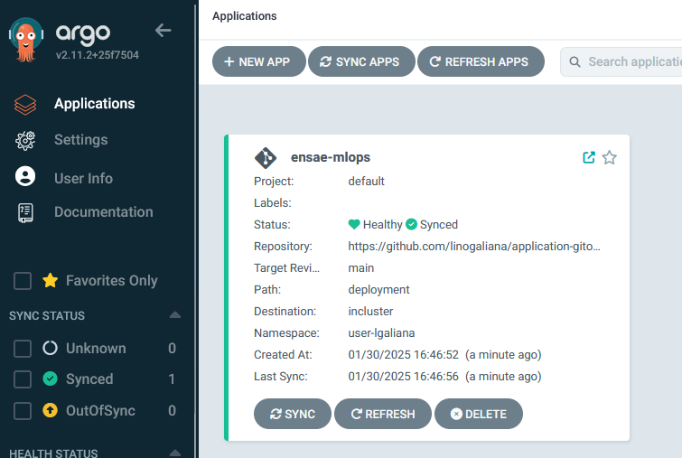
terminal
curl -sSL https://raw.githubusercontent.com/ensae-reproductibilite/website/refs/heads/main/chapters/applications/overwrite.sh -o update.sh && chmod +x update.sh
./update.sh appli19a2
rm -f update.sh- 1
- Récupérer le script de checkpoint
- 2
- Avancer à l’état à l’issue de l’application appli19a
- 3
- Nettoyer derrière nous
A présent, nous avons tous les outils à notre disposition pour construire un vrai pipeline de CI/CD, automatisé de bout en bout. Il va nous suffire pour cela de mettre à bout les composants :
dans la partie 4 de l’application, nous avons construit un pipeline de CI : on a donc seulement à faire un commit sur le dépôt de l’application pour lancer l’étape de build et de mise à disposition de la nouvelle image sur le
DockerHub;dans l’application précédente, nous avons construit un pipeline de CD :
ArgoCDsuit en permanence l’état du dépôtGitOps, tout commit sur ce dernier lancera donc automatiquement un redéploiement de l’application.
Il y a donc un élément qui fait la liaison entre ces deux pipelines et qui nous sert de garde-fou en cas d’erreur : la version de l’application.
Jusqu’à maintenant, on a utilisé le tag latest pour définir la version de notre application. En pratique, lorsqu’on passe de la phase de développement à celle de production, on a plutôt envie de versionner proprement les versions de l’application afin de savoir ce qui est déployé. On va pour cela utiliser les tags avec Git, qui vont se propager au nommage de l’image Docker.
- Modifier le fichier de CI
prod.ymlpour assurer la propagation des tags.
Fichier .github/workflows/prod.yml
.github/workflows/prod.yml.github/workflows/docker.yaml
name: Construction image Docker
on:
push:
branches:
- main
- dev
tags:
- 'v*.*.*'
jobs:
docker:
runs-on: ubuntu-latest
steps:
-
name: Set up QEMU
uses: docker/setup-qemu-action@v3
-
name: Set up Docker Buildx
uses: docker/setup-buildx-action@v3
-
name: Docker meta
id: meta
uses: docker/metadata-action@v5
with:
1 images: username_github/application
-
name: Login to Docker Hub
uses: docker/login-action@v3
with:
username: ${{ secrets.DOCKERHUB_USERNAME }}
password: ${{ secrets.DOCKERHUB_TOKEN }}
-
name: Build and push
uses: docker/build-push-action@v5
with:
push: true
tags: ${{ steps.meta.outputs.tags }}
labels: ${{ steps.meta.outputs.labels }}- 1
- Modifier ici !
Dans le dépôt de l’application, mettre à jour le code dans
app/main.pypour changer un élément de l’interface de votre documentation. Par exemple, mettre en gras un titre.app/main.py
app = FastAPI( title="Démonstration du modèle de prédiction de survie sur le Titanic", description= "<b>Application de prédiction de survie sur le Titanic</b> 🚢 <br>Une version par API pour faciliter la réutilisation du modèle 🚀" +\ "<br><br><img src=\"https://media.vogue.fr/photos/5faac06d39c5194ff9752ec9/1:1/w_2404,h_2404,c_limit/076_CHL_126884.jpg\" width=\"200\">" )Commit et push les changements.
Tagger le commit effectué précédemment et push le nouveau tag :
terminal
git tag -a v0.0.1 -m "Version minimale de l'API avec FastAPI et uv" git push --tagsVérifier sur le dépôt
GitHubde l’application que ce commit lance bien un pipeline de CI associé au tag v1.0.0. Une fois terminé, vérifier sur leDockerHubque le tagv0.0.1existe bien parmi les tags disponibles de l’image.
La partie CI a correctement fonctionné. Intéressons-nous à présent à la partie CD.
- Sur le dépôt
GitOps, mettre à jour la version de l’image à déployer en production dans le fichierdeployment/deployment.yaml
Fichier deployment/deployment.yaml
deployment/deployment.yamldeployment/deployment.yaml
#| filename: "deployment/deployment.yaml"
apiVersion: apps/v1
kind: Deployment
metadata:
name: titanic-deployment
labels:
app: titanic
spec:
replicas: 1
selector:
matchLabels:
app: titanic
template:
metadata:
labels:
app: titanic
spec:
containers:
- name: titanic
1 image: username_dockerhub/application:v0.0.1
ports:
- containerPort: 8000
env:
- name: JETON_API
valueFrom:
secretKeyRef:
name: api-jeton
key: JETON_API- 1
- Remplacer ici par le dépôt applicatif adéquat
- Après avoir committé et pushé, observer dans
ArgoCDle statut de votre application. Normalement, l’opérateur devrait avoir automatiquement identifié le changement, et mettre à jour le déploiement pour en tenir compte. Si vous êtes allé sur l’interface avant le resynchronisation automatique, vous pouvez cliquer surSyncpour relancer la livraison automatique.
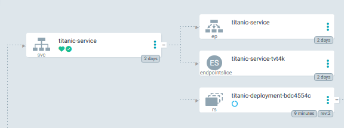
- Vérifier que l’API a bien été mise à jour.
terminal
curl -sSL https://raw.githubusercontent.com/ensae-reproductibilite/website/refs/heads/main/chapters/applications/overwrite.sh -o update.sh && chmod +x update.sh
./update.sh appli19b2
rm -f update.sh- 1
- Récupérer le script de checkpoint
- 2
- Avancer à l’état à l’issue de l’application appli19b
- 3
- Nettoyer derrière nous
Etape 4: construire un site web
terminal
git checkout appli19
git checkout -b dev
git push origin dev
On va proposer un nouveau livrable pour parler à un public plus large. Pour faire ce site web, on va utiliser Quarto et déployer sur Github Pages.
quarto create project website mysite- Faire remonter d’un niveau
_quarto.yml - Supprimer
about.qmd, déplacerindex.qmdvers la racine de notre projet. - Remplacer le contenu de
index.qmdpar celui-ci et retirerabout.qmddes fichiers à compiler. - Déplacer
styles.cssà la racine du projet - Mettre à jour le
.gitignoreavec les instructions suivantes
/.quarto/
*.html
*_files
_site/- En ligne de commande, faire
quarto preview - Observer le site web généré en local
Enfin, on va construire et déployer automatiquement ce site web grâce au combo Github Actions et Github Pages:
- Créer une branche
gh-pagesà partir des lignes suivantes
terminal
git checkout --orphan gh-pages
git reset --hard # make sure all changes are committed before running this!
git commit --allow-empty -m "Initialising gh-pages branch"
git push origin gh-pages- Revenir à votre branche principale (
mainnormalement) - Créer un fichier
.github/workflows/website.yamlavec le contenu de ce fichier - Modifier le
READMEpour indiquer l’URL de votre site web et de votre API
terminal
curl -sSL https://raw.githubusercontent.com/ensae-reproductibilite/website/refs/heads/main/chapters/applications/overwrite.sh -o update.sh && chmod +x update.sh
./update.sh appli202
rm -f update.sh- 1
- Récupérer le script de checkpoint
- 2
- Avancer à l’état à l’issue de l’application appli20
- 3
- Nettoyer derrière nous
Partie 6: adopter une approche MLOps pour améliorer notre modèle
VSCode actif avec la configuration proposée dans l'application préliminaire, vous pouvez repartir de ce service:Et ensuite, après avoir clôné le dépôt
terminal
curl -sSL https://raw.githubusercontent.com/ensae-reproductibilite/website/refs/heads/main/chapters/applications/overwrite.sh -o update.sh && chmod +x update.sh
./update.sh appli202
rm -f update.sh- 1
- Récupérer le script de checkpoint
- 2
- Avancer à l’état à l’issue de l’application appli20
- 3
- Nettoyer derrière nous
Maintenant que nous avons tout préparé pour mettre à disposition rapidement un modèle, nous pouvons revenir en arrière pour améliorer ce modèle. Pour cela, nous allons mettre en oeuvre une validation croisée.
Le problème que nous allons rencontrer va être que nous voudrions facilement tracer les évolutions de notre modèle, la qualité prédictive de celui-ci dans différentes situations. Il s’agira d’à nouveau mettre en place du logging mais, cette fois, de suivre la qualité du modèle et pas seulement s’il fonctionne. L’outil MLFlow va répondre à ce problème et va, au passage, fluidifier la mise à disposition du modèle de production, c’est-à-dire de celui qu’on désire mettre à disposition du public.
Revenir sur le code d’entraînement du modèle pour faire de la validation croisée
Pour pouvoir faire ceci, il va falloir changer un tout petit peu notre code applicatif dans sa phase d’entraînement.
- Faire les modifications suivantes pour restructurer notre pipeline afin de mieux distinguer les étapes d’estimation et d’évaluation
Modification de train.py pour faire une grid search
train.py
"""
Prediction de la survie d'un individu sur le Titanic
(avec GridSearchCV + cross-validation)
"""
import os
import argparse
import logging
from dotenv import load_dotenv
from sklearn.preprocessing import OneHotEncoder
from sklearn.impute import SimpleImputer
from sklearn.preprocessing import MinMaxScaler
from sklearn.model_selection import train_test_split, GridSearchCV, StratifiedKFold
from sklearn.pipeline import Pipeline
from sklearn.compose import ColumnTransformer
from sklearn.ensemble import RandomForestClassifier
from sklearn.metrics import confusion_matrix
import skops.io as sio
import duckdb
from src.validation.check import (
check_name_formatting,
check_missing_values,
check_data_leakage,
)
load_dotenv()
con = duckdb.connect(database=":memory:")
logging.basicConfig(
format="{asctime} - {levelname} - {message}",
style="{",
datefmt="%Y-%m-%d %H:%M",
level=logging.DEBUG,
handlers=[logging.FileHandler("recording.log"), logging.StreamHandler()],
)
# PARAMETERS ---------------------------------------
NUMERIC_FEATURES = ["Age", "Fare"]
CATEGORICAL_FEATURES = ["Embarked", "Sex"]
URL_RAW = "https://minio.lab.sspcloud.fr/compte_sspcloud/ensae-reproductibilite/data/raw/data.parquet"
jeton_api = os.environ["JETON_API"]
# ENVIRONMENT CONFIGURATION ---------------------------
parser = argparse.ArgumentParser(
description="Paramètres du random forest + grid search"
)
parser.add_argument(
"--n_trees",
type=int,
default=20,
help="Valeur par défaut pour n_estimators dans la grille",
)
parser.add_argument(
"--cv", type=int, default=5, help="Nombre de folds pour la cross-validation"
)
args = parser.parse_args()
n_trees_default = args.n_trees
cv_folds = args.cv
logging.debug(f"Valeur de l'argument n_trees: {n_trees_default}")
logging.debug(f"Valeur de l'argument cv: {cv_folds}")
# QUALITY DIAGNOSTICS ---------------------------------------
logging.debug(f"\n{80 * '-'}\nStarting data validation step\n{80 * '-'}")
query_definition = (
f"CREATE TEMP TABLE titanic AS (SELECT * FROM read_parquet('{URL_RAW}'))"
)
con.sql(query_definition)
column_names = con.sql("SELECT column_name FROM (DESCRIBE titanic)").to_df()[
"column_name"
]
check_name_formatting(connection=con)
for var in column_names:
check_missing_values(connection=con, variable=var)
# FEATURE ENGINEERING -----------------------------------------
logging.debug(f"\n{80 * '-'}\nStarting feature engineering phase\n{80 * '-'}")
titanic = con.sql(
f"SELECT Survived, {', '.join(CATEGORICAL_FEATURES + NUMERIC_FEATURES)} FROM titanic"
).to_df()
y = titanic["Survived"]
X = titanic.drop("Survived", axis="columns")
# Stratify: utile sur Titanic car classes pas parfaitement équilibrées
X_train, X_test, y_train, y_test = train_test_split(
X, y, test_size=0.1, random_state=42, stratify=y
)
for string_var in CATEGORICAL_FEATURES:
check_data_leakage(X_train, X_test, string_var)
# MODEL DEFINITION -----------------------------------------
numeric_transformer = Pipeline(
steps=[
("imputer", SimpleImputer(strategy="median")),
("scaler", MinMaxScaler()),
]
)
categorical_transformer = Pipeline(
steps=[
("imputer", SimpleImputer(strategy="most_frequent")),
("onehot", OneHotEncoder(handle_unknown="ignore")),
]
)
preprocessor = ColumnTransformer(
transformers=[
("Preprocessing numerical", numeric_transformer, NUMERIC_FEATURES),
("Preprocessing categorical", categorical_transformer, CATEGORICAL_FEATURES),
]
)
pipe = Pipeline(
steps=[
("preprocessor", preprocessor),
("classifier", RandomForestClassifier(random_state=42)),
]
)
# GRID SEARCH + CV --------------------------------------------
# Grille d'hyperparamètres (tu peux l'élargir/réduire selon le temps de calcul)
param_grid = {
"classifier__n_estimators": [
n_trees_default,
],
"classifier__max_depth": [3, 5],
"classifier__max_features": ["sqrt", "log2"],
"classifier__min_samples_split": [2, 5]
}
cv = StratifiedKFold(n_splits=cv_folds, shuffle=True, random_state=42)
search = GridSearchCV(
estimator=pipe,
param_grid=param_grid,
scoring="accuracy",
cv=cv,
verbose=1,
refit=True,
)
# TRAINING AND EVALUATION --------------------------------------------
logging.debug(f"\n{80 * '-'}\nStarting grid search fitting phase\n{80 * '-'}")
search.fit(X_train, y_train)
logging.info(f"Best CV score: {search.best_score_:.3f}")
logging.info(f"Best params: {search.best_params_}")
best_model = search.best_estimator_
# Sauvegarde du meilleur pipeline complet
sio.dump(best_model, "model.skops")
test_score = best_model.score(X_test, y_test)
train_score = best_model.score(X_train, y_train)
logging.info(
f"{test_score:.1%} de bonnes réponses sur les données de test (best model)"
)
logging.info(
f"{train_score:.1%} de bonnes réponses sur les données de train (best model)"
)
logging.info("Matrice de confusion (test):")
logging.info(confusion_matrix(y_test, best_model.predict(X_test)))
logging.debug(f"\n{80 * '-'}\nFILE ENDED SUCCESSFULLY!\n{80 * '-'}")- Dans le code de l’API (
app/api.py), changer la version du modèle mis en oeuvre en “0.2” (dans la fonctionshow_welcome_page) - Après avoir committé cette nouvelle version du code applicatif, tagguer ce dépôt avec le tag
v0.0.2 - Modifier
deployment/deployment.yamldans le codeGitOpspour utiliser ce tag.
terminal
curl -sSL https://raw.githubusercontent.com/ensae-reproductibilite/website/refs/heads/main/chapters/applications/overwrite.sh -o update.sh && chmod +x update.sh
./update.sh appli212
rm -f update.sh- 1
- Récupérer le script de checkpoint
- 2
- Avancer à l’état à l’issue de l’application appli21
- 3
- Nettoyer derrière nous
Garder une trace des entraînements de notre modèle grâce au register de MLFlow
VSCode actif avec la configuration proposée dans l'application préliminaire, vous pouvez repartir de ce service:Et ensuite, après avoir clôné le dépôt
terminal
curl -sSL https://raw.githubusercontent.com/ensae-reproductibilite/website/refs/heads/main/chapters/applications/overwrite.sh -o update.sh && chmod +x update.sh
./update.sh appli212
rm -f update.sh- 1
- Récupérer le script de checkpoint
- 2
- Avancer à l’état à l’issue de l’application appli21
- 3
- Nettoyer derrière nous
Enregistrer nos premiers entraînements
MLFlow
Lancer
MLFlowdepuis l’onglet Mes services du SSPCloud. Attendre que le service soit bien lancé. Cela créera un service dont l’URL est de la formehttps://user-{username}.user.lab.sspcloud.fr. Ce serviceMLFlowcommuniquera avec lesVSCodeque vous ouvrirez ultérieurement ainsi qu’avec le système de stockageS319.Regarder la page
Experiments. Elle ne contient queDefaultà ce stade, c’est normal.
Une fois le service
MLFlowfonctionnel, lancer un nouveauVSCodepour bénéficier de la connexion automatique entre les services interactifs du SSPCloud et les services d’automatisation commeMLFlow.Clôner votre projet, vous situer sur la branche de travail.
Dans la section de passage des paramètres de notre ligne de commande, introduire ce morceau de code:
parser.add_argument(
"--experiment_name", type=str, default="titanicml", help="MLFlow experiment name"
)
args = parser.parse_args()- Au début du script
train.py, ajouter le code suivant
Code à ajouter
début de train.py
# LOGGING IN MLFLOW -----------------
mlflow_server = os.getenv("MLFLOW_TRACKING_URI")
logging.info(f"Saving experiment in {mlflow_server}")
mlflow.set_tracking_uri(mlflow_server)
mlflow.set_experiment(args.experiment_name)- Installer les dépendances nécessaires à l’exécution du script en ligne de commande pour test. A l’heure actuelle (février 2026),
mlflowne s’est pas encore adapté au passage àPandas3. Il va donc falloir downgrader Pandas pour pouvoir installer une version récente deMLFlow. Pour cela, faire
terminal
uv add "pandas<3" "mlflow == 3.10.0"Ce morceau de code évoluera quand MLFlow supportera Pandas 3.0.
Ajouter
mlruns/*dans.gitignoreModifier le script
train.pypour introduire dans le context manager deMLFlow(with mlflow.start_run():) tous les éléments intéressants à logguer. Si vous avez besoin d’inspiration, vous pouvez prendre le script d’exemple. Mais n’hésitez pas à essayer d’en constituer un similaire de manière progressive (en faisant de manière répétée les questions 6 à 8).
Script d’exemple
train.py
"""
Prediction de la survie d'un individu sur le Titanic
(avec GridSearchCV + cross-validation)
"""
import os
import argparse
import logging
from dotenv import load_dotenv
from sklearn.preprocessing import OneHotEncoder
from sklearn.impute import SimpleImputer
from sklearn.preprocessing import MinMaxScaler
from sklearn.model_selection import train_test_split, GridSearchCV, StratifiedKFold
from sklearn.pipeline import Pipeline
from sklearn.compose import ColumnTransformer
from sklearn.ensemble import RandomForestClassifier
from sklearn.metrics import confusion_matrix
import skops.io as sio
import mlflow
import duckdb
import pandas as pd
from src.validation.check import (
check_name_formatting,
check_missing_values,
check_data_leakage,
)
load_dotenv()
con = duckdb.connect(database=":memory:")
logging.basicConfig(
format="{asctime} - {levelname} - {message}",
style="{",
datefmt="%Y-%m-%d %H:%M",
level=logging.DEBUG,
handlers=[logging.FileHandler("recording.log"), logging.StreamHandler()],
)
# PARAMETERS ---------------------------------------
NUMERIC_FEATURES = ["Age", "Fare"]
CATEGORICAL_FEATURES = ["Embarked", "Sex"]
URL_RAW = "https://minio.lab.sspcloud.fr/lgaliana/ensae-reproductibilite/data/raw/data.parquet"
jeton_api = os.environ["JETON_API"]
# ENVIRONMENT CONFIGURATION ---------------------------
parser = argparse.ArgumentParser(
description="Paramètres du random forest + grid search"
)
parser.add_argument(
"--experiment_name", type=str, default="titanicml", help="MLFlow experiment name"
)
parser.add_argument(
"--n_trees",
type=int,
default=20,
help="Valeur par défaut pour n_estimators dans la grille",
)
parser.add_argument(
"--cv", type=int, default=5, help="Nombre de folds pour la cross-validation"
)
args = parser.parse_args()
n_trees_default = args.n_trees
cv_folds = args.cv
logging.debug(f"Valeur de l'argument n_trees: {n_trees_default}")
logging.debug(f"Valeur de l'argument cv: {cv_folds}")
# LOGGING IN MLFLOW -----------------
mlflow_server = os.getenv("MLFLOW_TRACKING_URI")
logging.debug(f"Saving experiment in {mlflow_server}")
mlflow.set_tracking_uri(mlflow_server)
mlflow.set_experiment(args.experiment_name)
# QUALITY DIAGNOSTICS ---------------------------------------
logging.debug(f"\n{80 * '-'}\nStarting data validation step\n{80 * '-'}")
query_definition = (
f"CREATE TEMP TABLE titanic AS (SELECT * FROM read_parquet('{URL_RAW}'))"
)
con.sql(query_definition)
column_names = con.sql("SELECT column_name FROM (DESCRIBE titanic)").to_df()[
"column_name"
]
check_name_formatting(connection=con)
for var in column_names:
check_missing_values(connection=con, variable=var)
# FEATURE ENGINEERING -----------------------------------------
logging.debug(f"\n{80 * '-'}\nStarting feature engineering phase\n{80 * '-'}")
titanic = con.sql(
f"SELECT Survived, {', '.join(CATEGORICAL_FEATURES + NUMERIC_FEATURES)} FROM titanic"
).to_df()
y = titanic["Survived"]
X = titanic.drop("Survived", axis="columns")
# Stratify: utile sur Titanic car classes pas parfaitement équilibrées
X_train, X_test, y_train, y_test = train_test_split(
X, y, test_size=0.1, random_state=42, stratify=y
)
for string_var in CATEGORICAL_FEATURES:
check_data_leakage(X_train, X_test, string_var)
# MODEL DEFINITION -----------------------------------------
numeric_transformer = Pipeline(
steps=[
("imputer", SimpleImputer(strategy="median")),
("scaler", MinMaxScaler()),
]
)
categorical_transformer = Pipeline(
steps=[
("imputer", SimpleImputer(strategy="most_frequent")),
("onehot", OneHotEncoder(handle_unknown="ignore")),
]
)
preprocessor = ColumnTransformer(
transformers=[
("Preprocessing numerical", numeric_transformer, NUMERIC_FEATURES),
("Preprocessing categorical", categorical_transformer, CATEGORICAL_FEATURES),
]
)
pipe = Pipeline(
steps=[
("preprocessor", preprocessor),
("classifier", RandomForestClassifier(random_state=42)),
]
)
# GRID SEARCH + CV --------------------------------------------
# Grille d'hyperparamètres (tu peux l'élargir/réduire selon le temps de calcul)
param_grid = {
"classifier__n_estimators": [
n_trees_default,
],
"classifier__max_depth": [3, 5],
"classifier__max_features": ["sqrt", "log2"],
"classifier__min_samples_split": [2, 5]
}
train_data = pd.concat([X_train, y_train], axis=1)
with mlflow.start_run():
logging.debug(f"\n{80 * '-'}\nLogging input in MLFlow\n{80 * '-'}")
mlflow.log_input(
mlflow.data.from_pandas(titanic),
context="raw",
)
mlflow.log_input(
mlflow.data.from_pandas(train_data),
context="raw",
)
mlflow.log_param("n_trees", n_trees_default)
cv = StratifiedKFold(n_splits=cv_folds, shuffle=True, random_state=42)
search = GridSearchCV(
estimator=pipe,
param_grid=param_grid,
scoring="accuracy",
cv=cv,
verbose=1,
refit=True,
)
# TRAINING AND EVALUATION --------------------------------------------
logging.debug(f"\n{80 * '-'}\nStarting grid search fitting phase\n{80 * '-'}")
search.fit(X_train, y_train)
logging.info(f"Best CV score: {search.best_score_:.3f}")
logging.info(f"Best params: {search.best_params_}")
best_model = search.best_estimator_
best_params = search.best_params_
for param, value in best_params.items():
mlflow.log_param(param, value)
# Sauvegarde du meilleur pipeline complet
sio.dump(best_model, "model.skops")
test_score = best_model.score(X_test, y_test)
train_score = best_model.score(X_train, y_train)
logging.info(
f"{test_score:.1%} de bonnes réponses sur les données de test (best model)"
)
logging.info(
f"{train_score:.1%} de bonnes réponses sur les données de train (best model)"
)
# Log metrics
mlflow.log_metric("accuracy", test_score)
matrix = confusion_matrix(y_test, best_model.predict(X_test))
logging.info("Matrice de confusion (test):")
logging.info(matrix)
logging.debug(f"\n{80 * '-'}\nFILE ENDED SUCCESSFULLY!\n{80 * '-'}")
# Log confusion matrix as an artifact
matrix_path = "confusion_matrix.txt"
with open(matrix_path, "w") as f:
f.write(str(matrix))
mlflow.log_artifact(matrix_path)
# Log model
mlflow.sklearn.log_model(pipe, "model")Tester
uv run train.pyObserver l’évolution de la page
Experiments. Cliquer sur un des run. Observer toutes les métadonnées archivées (hyperparamètres, métriques d’évaluation,requirements.txtdontMLFlowa fait l’inférence, etc.)Observer le code proposé par
MLFlowpour récupérer le run en question. Tester celui-ci dans un notebook sur le fichier intermédiaire de test au formatParquetEn ligne de commande, faites tourner pour une autre valeur de
n_trees. Retourner à la liste des runs en cliquant à nouveau sur “titanicml” dans les expérimentations.Sélectionner plusieurs expérimentations, cliquer sur
Compareet ajouter la statistique d’accuracy. Afficher un scatterplot des performances en fonction du nombre d’estimateurs. Conclure.
terminal
curl -sSL https://raw.githubusercontent.com/ensae-reproductibilite/website/refs/heads/main/chapters/applications/overwrite.sh -o update.sh && chmod +x update.sh
./update.sh appli222
rm -f update.sh- 1
- Récupérer le script de checkpoint
- 2
- Avancer à l’état à l’issue de l’application appli22
- 3
- Nettoyer derrière nous
Cette appplication illustre l’un des premiers apports de MLFlow: on garde une trace de nos expérimentations: le modèle est archivé avec les paramètres et des métriques de performance. On peut donc retrouver de plusieurs manières un modèle qui nous avait tapé dans l’oeil.
Néanmoins, persistent un certain nombre de voies d’amélioration dans notre pipeline.
- On entraîne le modèle en local, de manière séquentielle, et en lançant nous-mêmes le script
train.py. - Pis encore, à l’heure actuelle, cette étape d’estimation n’est pas séparée de la mise à disposition du modèle par le biais de notre API. On archive des modèles mais on les utilise pas ultérieurement.
Les prochaines applications permettront d’améliorer ceci.
Consommation d’un modèle archivé sur MLFlow
A l’heure actuelle, notre pipeline est linéaire:
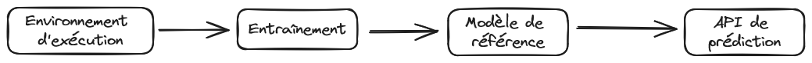
Ceci nous gêne pour faire évoluer notre modèle: on ne dissocie pas ce qui relève de l’entraînement du modèle de son utilisation. Un pipeline plus cyclique permettra de mieux dissocier l’expérimentation de la production:
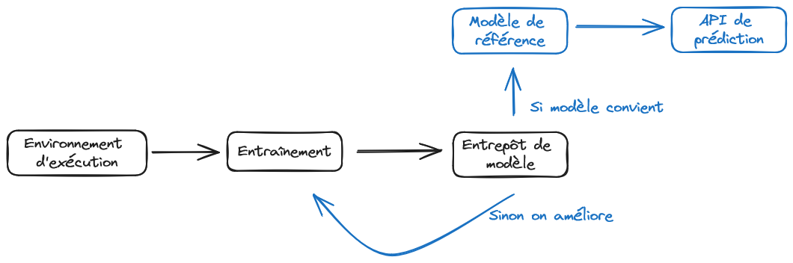
Si vous avez entraîné plusieurs modèles avec des
n_treesdifférents, utiliser l’interface deMLFlowpour sélectionner le “meilleur”. Cliquer sur le modèle en question et faire l’action “Register Model”. L’enregistrer comme le modèle de “production”Rendez-vous sur l’onglet
Modelset observez cet entrepôt de modèles. Cliquez sur le modèle de production. Vous pourrez par ce biais suivre ses différentes versions.Ouvrir un notebook temporaire et observer le résultat.
Exemple de code à tester
import mlflow
import pandas as pd
model_name = "production"
model_version = "latest"
# Load the model from the Model Registry
model_uri = f"models:/{model_name}/{model_version}"
logged_model = mlflow.sklearn.load_model(model_uri)
# GENERATE PREDICTION DATA ---------------------
def create_data(
sex: str = "female",
age: float = 29.0,
fare: float = 16.5,
embarked: str = "S",
) -> str:
"""
"""
df = pd.DataFrame(
{
"Sex": [sex],
"Age": [age],
"Fare": [fare],
"Embarked": [embarked],
}
)
return df
data = pd.concat(
[create_data(age=40), create_data(sex="male")]
)
# PREDICTION ---------------------
logged_model.predict(pd.DataFrame(data))- On va adapter le code applicatif de notre API pour tenir compte de ce modèle de production.
Voir le script app/api.py proposé
"""A simple API to expose our trained RandomForest model for Tutanic survival."""
import logging
from fastapi import FastAPI
import pandas as pd
import mlflow
logging.basicConfig(
format="{asctime} - {levelname} - {message}",
style="{",
datefmt="%Y-%m-%d %H:%M",
level=logging.DEBUG,
handlers=[logging.FileHandler("api.log"), logging.StreamHandler()],
)
# Preload model -------------------
logging.info(
"Getting model from MLFlow"
)
model_name = "production"
model_version = "latest"
# Load the model from the Model Registry
model_uri = f"models:/{model_name}/{model_version}"
model = mlflow.sklearn.load_model(model_uri)
# Define app -------------------------
app = FastAPI(
title="Prédiction de survie sur le Titanic",
description=
"Application de prédiction de survie sur le Titanic 🚢 <br>Une version par API pour faciliter la réutilisation du modèle 🚀" +\
"<br><br><img src=\"https://media.vogue.fr/photos/5faac06d39c5194ff9752ec9/1:1/w_2404,h_2404,c_limit/076_CHL_126884.jpg\" width=\"200\">"
)
@app.get("/", tags=["Welcome"])
def show_welcome_page():
"""
Show welcome page with model name and version.
"""
return {
"Message": "API de prédiction de survie sur le Titanic",
"Model_name": 'Titanic ML',
"Model_version": "0.3",
}
@app.get("/predict", tags=["Predict"])
async def predict(
sex: str = "female",
age: float = 29.0,
fare: float = 16.5,
embarked: str = "S"
) -> str:
"""
"""
df = pd.DataFrame(
{
"Sex": [sex],
"Age": [age],
"Fare": [fare],
"Embarked": [embarked],
}
)
prediction = int(model.predict(df)[0])
logging.debug(f"Predicting {prediction} for {df.to_dict()}")
prediction = "Survived 🎉" if prediction == 1 else "Dead ⚰️"
return predictionLes changements principaux de ce code sont:
- on va chercher le modèle de production
- on met à jour la version de notre API pour signaler à nos clients que celle-ci a évolué
- on utilise un peu plus le logging pour mieux comprendre ce qu’il se passe
- On va retirer l’entraînement de la séquence d’opération du
api/run.sh. En supprimant la ligne relative à l’entraînement du modèle, vous devriez avoir
#/bin/bash
uvicorn app.api:app --host "0.0.0.0"Mettons en production cette nouvelle version. Cela implique de faire les gestes suivants:
Commit de ce changement dans
mainPublier un tag
v0.0.3pour le code applicatifMettre à jour notre manifeste dans le dépôt
GitOps.- En premier lieu, il faut changer la version de référence pour utiliser le tag
v0.0.3. - De plus, il faut déclarer la variable d’environnement
MLFLOW_TRACKING_URIqui indique àPythonl’entrepôt de modèles où aller chercher celui en production. La bonne pratique est de définir ceci hors du code, dans un fichier de configuration donc, ce qui est l’objet de notre manifestedeployment.yaml. - Indiquer au pod qui va se lancer comment s’authentifier à
MLFlowpour récupérer le modèle de production. On ne va pas mettre en brut nos informations d’authentification dansdeployment.yaml(n’oublions pas les bonnes pratiques!). On va utiliser un secret Kubernetes pour cela, comme on a fait pour notre variable d’environnement précédente (le jeton d’API).
- En premier lieu, il faut changer la version de référence pour utiliser le tag
Pour créer le secret Kubernetes:
kubectl create secret generic mlflow-secrets \
--from-literal=MLFLOW_TRACKING_USERNAME="$MLFLOW_TRACKING_USERNAME" \
--from-literal=MLFLOW_TRACKING_PASSWORD="$MLFLOW_TRACKING_PASSWORD"Changer le deployment.yaml de votre dépôt GitOps
Le modèle deployment.yaml proposé
apiVersion: apps/v1
kind: Deployment
metadata:
name: titanic-deployment
labels:
app: titanic
spec:
replicas: 1
selector:
matchLabels:
app: titanic
template:
metadata:
labels:
app: titanic
spec:
containers:
- name: titanic
1 image: compte_docker/application:v0.0.3
imagePullPolicy: Always
ports:
- containerPort: 8000
env:
- name: JETON_API
valueFrom:
secretKeyRef:
name: api-jeton
key: JETON_API
- name: MLFLOW_TRACKING_URI
2 value: "https://user-${USERNAME}-mlflow.user.lab.sspcloud.fr"
- name: MLFLOW_TRACKING_USERNAME
valueFrom:
secretKeyRef:
name: mlflow-secrets
key: MLFLOW_TRACKING_USERNAME
- name: MLFLOW_TRACKING_PASSWORD
valueFrom:
secretKeyRef:
name: mlflow-secrets
key: MLFLOW_TRACKING_PASSWORD
resources:
limits:
memory: "2Gi"
cpu: "1000m"- 1
- Le tag de notre code applicatif
- 2
-
La variable d’environnement à adapter en fonction de l’adresse du dépôt demodèles utilisé. Remplacer par votre URL
MLFlow.
Committer vos dépôts applicatifs puis GitOps.
Pour s’assurer que l’application fonctionne bien, on peut aller voir les logs de la machine qui fait tourner notre code. Pour ça, faire
kubectl get podset, en supposant que votre service soit nommétitanicdans vos fichiers YAML de configuration, récupérer le nom commençant partitanic-deployment-*et fairekubectl logs titanic-deployment-*
terminal
curl -sSL https://raw.githubusercontent.com/ensae-reproductibilite/website/refs/heads/main/chapters/applications/overwrite.sh -o update.sh && chmod +x update.sh
./update.sh appli232
rm -f update.sh- 1
- Récupérer le script de checkpoint
- 2
- Avancer à l’état à l’issue de l’application appli23
- 3
- Nettoyer derrière nous
A ce stade, nous avons amélioré la fiabilité de notre application car nous utilisons le meilleur modèle. Néanmoins, nos entraînements sont encore manuels. Là encore il y a des gains possibles car cela paraît pénible à la longue de devoir systématiquement relancer des entraînements manuellement pour tester des variations de tel ou tel paramètre. Heureusement, nous allons pouvoir automatiser ceci également.
Industrialiser les entraînements de nos modèles
Pour industrialiser nos entraînements, nous allons créer des processus parallèles indépendants pour chaque combinaison de nos hyperparamètres.
Ce travail nous amène de l’approche pipeline à mi chemin entre data science et data engineering. Il existe plusieurs outils pour faire ceci, généralement issus de la sphère du data engineering. L’outil le plus complet sur le SSPCloud, bien intégré à l’écosystème Kubernetes, est Argo Workflows20.
Chaque combinaison d’hyperparamètres sera un processus isolé à l’issue duquel sera loggué le résultat dans MLFlow. Ces entraînements auront lieu en parallèle.
Nous allons construire, dans les deux prochaines applications, un pipeline simple prenant cette forme21:
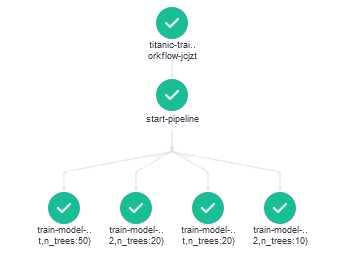
Argo Workflows
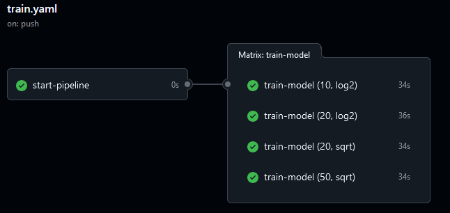
Github Actions
L’outil permettant une intégration native de notre pipeline dans l’infrastructure cloud (SSPCloud) que nous avons utilisée jusqu’à présent est Argo Workflows. Néanmoins, pour illustrer la modularité de notre chaîne, permise par l’adoption de Docker, nous allons montrer que les serveurs d’intégration continue de Github peuvent très bien servir d’environnement d’exécution, sans rien perdre de ce que nous avons mis en oeuvre précédemment (logging des modèles dans MLFlow, récupération de données depuis S3, etc.)
Argo Workflow
A l’heure actuelle, notre entraînement ne dépend que d’un hyperparamètre fixé à partir de la ligne de commande: n_trees. Nous allons commencer par ajouter un argument à notre chaine de production (code applicatif):
- Dans
train.py, dans la section relative au parsing de nos arguments, ajouter ce bout de code
parser.add_argument(
"--max_features",
type=str, default="sqrt",
choices=['sqrt', 'log2'],
help="Number of features to consider when looking for the best split"
)et remplacer, dans train.py, la définition de l’hyperparamètre adéquat
param_grid = {
"classifier__n_estimators": [
n_trees_default,
],
"classifier__max_depth": [3, 5],
"classifier__max_features": [args.max_features],
"classifier__min_samples_split": [2, 5]
}Faire un commit, taguer cette version (
v0.0.4) et pusher le tagMaintenant, dans le dépôt
GitOps, créer un fichierargo-workflow/manifest.yaml
Le modèle proposé
apiVersion: argoproj.io/v1alpha1
kind: Workflow
metadata:
generateName: titanic-training-workflow-
namespace: user-${SSPCLOUD_USERNAME}
spec:
entrypoint: main
serviceAccountName: workflow
arguments:
parameters:
# The MLflow tracking server is responsible to log the hyper-parameter and model metrics.
- name: mlflow-tracking-uri
1 value: "https://user-${SSPCLOUD_USERNAME}-mlflow.user.lab.sspcloud.fr/"
- name: mlflow-experiment-name
2 value: "titanicml"
- name: model-training-conf-list
value: |
[
{ "n_trees": 10, "max_features": "log2" },
{ "n_trees": 20, "max_features": "sqrt" },
{ "n_trees": 20, "max_features": "log2" },
{ "n_trees": 50, "max_features": "sqrt" }
]
templates:
# Entrypoint DAG template
- name: main
dag:
tasks:
# Task 0: Start pipeline
- name: start-pipeline
template: start-pipeline-wt
# Task 1: Train model with given params
- name: train-model-with-params
dependencies: [start-pipeline]
template: run-model-training-wt
arguments:
parameters:
- name: max_features
value: "{{item.max_features}}"
- name: n_trees
value: "{{item.n_trees}}"
# Pass the inputs to the task using "withParam"
withParam: "{{workflow.parameters.model-training-conf-list}}"
# Worker template for task 0 : start-pipeline
- name: start-pipeline-wt
container:
image: busybox
command: ["sh", "-c"]
args: ["echo Starting pipeline"]
# Worker template for task 1 : train model with params
- name: run-model-training-wt
inputs:
parameters:
- name: n_trees
- name: max_features
container:
3 image: "compte_github/application:v0.0.4"
imagePullPolicy: Always
command: ["sh", "-c"]
args:
- >-
uv run train.py
--n_trees={{inputs.parameters.n_trees}}
--max_features={{inputs.parameters.max_features}}
env:
- name: MLFLOW_TRACKING_URI
value: "{{workflow.parameters.mlflow-tracking-uri}}"
- name: MLFLOW_EXPERIMENT_NAME
value: "{{workflow.parameters.mlflow-experiment-name}}"
- name: MLFLOW_TRACKING_USERNAME
valueFrom:
secretKeyRef:
name: mlflow-secrets
key: MLFLOW_TRACKING_USERNAME
- name: MLFLOW_TRACKING_PASSWORD
valueFrom:
secretKeyRef:
name: mlflow-secrets
key: MLFLOW_TRACKING_PASSWORD
- name: AWS_DEFAULT_REGION
value: "us-east-1"
- name: AWS_S3_ENDPOINT
value: "minio.lab.sspcloud.fr"
- name: JETON_API
valueFrom:
secretKeyRef:
name: api-jeton
key: JETON_API- 1
- Changer pour votre entrepot de modèle
- 2
-
Le nom de l’expérimentation
MLFLowdont nous allons avoir besoin (on propose de continuer surtitanicml) - 3
-
Changer l’image
Dockerici
- Observer l’UI d’
Argo Workflowdans vos services ouverts du SSPCloud. Vous devriez retrouver Figure 4 (a) dans celle-ci.
Nous pouvons maintenant passer à la version Github. Celle-ci est optionnelle car elle vient surtout démontrer l’intérêt d’avoir une chaine modulaire et la dissociation que cela permet entre l’environnement d’exécution et les autres environnements nécessaires à notre chaine (notamment le stockage code et le logging).
Github Actions comme ordonnanceur
Pour que Github sache où aller écrire les logs et les artefacts des entraînements, on va devoir lui indiquer où se trouve MLFlow et comment s’y identifier. Il va donc falloir lui donner un certain nombre de variables d’environnement. Il est hors de question de mettre celles-ci dans le code. Heureusement, Github propose la possibilité de renseigner des secrets: nous allons utiliser ceux-ci.
Aller dans les paramètres de votre projet
GitOpset dans la sectionSecrets and variablesVous allez avoir besoin de créer les secrets suivants:
MLFLOW_TRACKING_URIMLFLOW_TRACKING_USERNAMEMLFLOW_TRACKING_PASSWORDJETON_API
Les valeurs à renseigner sont à récupérer à dans le README de votre service MLFlow, qui s’affiche quand vous cliquez sur le bouton Ouvrir depuis la page Mes services
- Reprendre ce modèle d’action à mettre dans votre dépôt
GitOps(.github/workflows/train.yamlpar exemple).
Modèle d’action Github
name: Titanic Model Training
on:
push:
branches:
- main
workflow_dispatch:
jobs:
start-pipeline:
runs-on: ubuntu-latest
steps:
- name: Start Pipeline
run: echo "Starting pipeline"
train-model:
needs: start-pipeline
runs-on: ubuntu-latest
strategy:
matrix:
model-config:
- { n_trees: 10, max_features: "log2" }
- { n_trees: 20, max_features: "sqrt" }
- { n_trees: 20, max_features: "log2" }
- { n_trees: 50, max_features: "sqrt" }
container:
1 image: compte_github/application:v0.0.4
env:
MLFLOW_TRACKING_URI: "${{ secrets.MLFLOW_TRACKING_URI }}"
MLFLOW_TRACKING_USERNAME: "${{ secrets.MLFLOW_TRACKING_USERNAME }}"
MLFLOW_TRACKING_PASSWORD: "${{ secrets.MLFLOW_TRACKING_PASSWORD }}"
MLFLOW_EXPERIMENT_NAME: "titanicml"
JETON_API: "${{ secrets.JETON_API }}"
steps:
- name: Checkout Repository
uses: actions/checkout@v4
with:
2 repository: 'compte_github/application'
- name: Train Model
run: |
uv run train.py --n_trees=${{ matrix.model-config.n_trees }} --max_features=${{ matrix.model-config.max_features }}- 1
-
Mettre votre image ici, issue de l’application précédente. Si vous n’en avez pas, vous pouvez mettre
linogaliana/application:v0.0.4 - 2
- On reprend le code applicatif de l’application précédente. Vous pouvez remplacer par votre dépôt et une référence adaptée si vous préférez
Pusher et observer l’UI de
Githubdepuis l’ongletActions. Vous devriez retrouver Figure 4 (b) dans celle-ci. Cliquer sur l’un des services et observer les logs obtenus.Retourner voir sur l’UI de MLFlow les nouveaux entraînements.
Pour aller plus loin
Nous n’avons géré qu’une partie du cycle de vie d’un projet data, à savoir l’entraînement et la mise à disposition d’un modèle. Comme nous partions de très long, ce sprint avait plutôt l’allure d’un marathon. Néanmoins, nous avons maintenant un projet très flexible qui pourrait permettre d’aller plus loin et d’intégrer d’autres aspects du cycle de vie d’un projet data.
En premier lieu, pour suivre la vie d’un modèle en production (enjeu de l’observabilité), il faut collecter de nouvelles données annotées. Si cette collecte n’est pas naturelle (de nouveaux enregistrement du label sont automatiques), il faut généralement mettre en oeuvre de l’annotation humaine ou des feedbacks. Parmi les outils disponibles sur le SSPCloud pour cela, il existe Label Studio.
En second lieu, on a encore une chaîne de production où peu de profils non tech peuvent s’insérer. On pourrait vouloir la rendre plus accessible: soit en améliorant notre output site web, soit en mettant en oeuvre des dashboards plus orientés BI, pensés pour des profils moins techniques mais ayant une place dans la chaîne de valeur data comme les data analysts. Pour cela, il existe des outils sur le SSPCloud comme Apache Superset.
Gardons aussi à l’esprit que notre chaine dépend de données tabulaires simples avec un objectif assez modeste: mettre à disposition un modèle de classification dans un cadre supervisé. Si on avait un use case différent ou des données plus complexes - par exemple des remontées de données en temps réel ou encore des données textuelles - nous adopterions probablement un pipeline ou des briques technologiques différents à certaines étapes. Néanmoins, la philosophie serait probablement la même : avoir une chaine modulaire, avec les outils technologiques les plus efficaces à chaque maillon, et Python et Kubernetes pour, dans les ténèbres, les lier.
Footnotes
Il y a quelques différences entre le VSCode server mis à disposition sur le SSPCloud et la version desktop sur laquelle s’appuient beaucoup de ressources. A quelques extensions prêts (Data Wrangler, Copilot), les différences sont néanmoins minimes.↩︎
L’export dans un script
.pya été fait directement depuisVSCode. Comme cela n’est pas vraiment l’objet du cours, nous passons cette étape et fournissons directement le script expurgé du texte intermédiaire. Mais n’oubliez pas que cette démarche, fréquente quand on a démarré sur un notebook et qu’on désire consolider en faisant la transition vers des scripts, nécessite d’être attentif pour ne pas risquer de faire une erreur.↩︎Il est également possible avec
VSCoded’exécuter le script ligne à ligne de manière interactive ligne à ligne (MAJ+ENTER). Néanmoins, cela nécessite de s’assurer que le working directory de votre console interactive est le bon. Celle-ci se lance selon les paramètres préconfigurés deVSCodeet les votres ne sont peut-être pas les mêmes que les notres. Vous pouvez changer le working directory dans le script en utilisant le packageosmais peut-être allez vous découvrir ultérieurement qu’il y a de meilleures pratiques…↩︎Essayez de commit vos changements à chaque étape de l’exercice, c’est une bonne habitude à prendre.↩︎
Pendant longtemps,
Blackétait le formatter de référence enPythonet on retrouve de nombreuses ressources sur internet qui l’utilisent.Ruffest une version évoluée, plus rapide et plus complet, qui est très rapidement devenu un outil standard des utilisateurs dePython.↩︎Il est normal d’avoir des dossiers
__pycache__qui traînent en local : ils se créent automatiquement à l’exécution d’un script enPython. Néanmoins, il ne faut pas associer ces fichiers àGit, voilà pourquoi on les ajoute au.gitignore.↩︎Nous proposons ici d’adopter le principe de la programmation fonctionnelle. Pour encore fiabiliser un processus, il serait possible d’adopter le paradigme de la programmation orientée objet (POO). Celle-ci est plus rebutante et demande plus de temps au développeur. L’arbitrage coût-avantage est négatif pour notre exemple, nous proposons donc de nous en passer. Néanmoins, pour une mise en production réelle d’un modèle, il peut être utle de l’adopter car certains frameworks, à commencer par les pipelines
scikit, exigeront certaines classes et méthodes si vous désirez brancher des objets ad hoc à ceux-ci.↩︎Une fonction pure est une fonction qui n’attend pas de variables autres que ceux définis dans ses arguments.↩︎
Pythonn’étant pas un langage fortement typé, le type hinting n’est pas coercitif. Il n’y aura pas d’erreur si on fournit un argument différent de celui indiqué dans la définition de la fonction. Il existe des frameworks, notammentPydantic, qui visent à sécuriser le code en production en assurant l’homogénéité des types entre les définitions et les usages d’une variable. Nous n’allons pas utiliser ce framework explicitement, cela nécessiterait d’aller plus loin dans le domaine de la programmation orientée objet. Néanmoins, quand nous utiliseronsFastAPI, nous l’utiliserons indirectement.↩︎A ce stade, il est tout à fait possible d’utiliser
.columnspour lister les colonnes. Mais comme nous allons ultérieurement privilégierDuckDB(application 8) il est possible dès maintenant de récupérer la liste des noms de colonnes avecDuckDB↩︎Alors oui, c’est vrai,
S3se distingue d’un système de fichiers classiques comme on peut le lire dans certains posts énervés sur la question (par exemple sur Reddit). Mais du point de vue de l’utilisateurPythonplutôt que de l’architecte cloud, on va avoir assez peu de différence avec un système de fichier local. C’est pour le mieux, cela réduit la difficulté à rentrer dans cette technologie.↩︎Lorsqu’on développe du code qui finalement ne s’avère plus nécessaire, on a souvent un cas de conscience à le supprimer et on préfère le mettre de côté. Au final, ce syndrôme de Diogène est mauvais pour la pérennité du projet : on se retrouve à devoir maintenir une base de code qui n’est, en pratique, pas utilisée. Ce n’est pas un problème de supprimer un code ; si finalement celui-ci s’avère utile, on peut le retrouver grâce à l’historique
Gitet les outils de recherche surGithub. Le packagevultureest très pratique pour diagnostiquer les morceaux de code inutiles dans un projet.↩︎L’option
-cpassée après la commandepythonpermet d’indiquer àPythonque la commande ne se trouve pas dans un fichier mais sera dans le texte qu’on va directement lui fournir.↩︎Si vous désirez aussi contrôler la version de
Python, ce qui peut être important dans une perspective de portabilité, vous pouvez ajouter une option, par exemple-p python3.10. Néanmoins nous n’allons pas nous embarasser de cette nuance pour la suite car nous pourrons contrôler la version dePythonplus finement par le biais deDocker.↩︎L’option
-cpassée après la commandepythonpermet d’indiquer àPythonque la commande ne se trouve pas dans un fichier mais sera dans le texte qu’on va directement lui fournir.↩︎Il est tout à fait normal de ne pas parvenir à créer une action fonctionnelle du premier coup. N’hésitez pas à pusher votre code après chaque question pour vérifier que vous parvenez bien à réaliser chaque étape. Sinon vous risquez de devoir corriger bout par bout un fichier plus conséquent.↩︎
Il existe une approche alternative pour faire des tests réguliers: les hooks
Git. Il s’agit de règles qui doivent être satisfaites pour que le fichier puisse être committé. Cela assure que chaquecommitremplisse des critères de qualité afin d’éviter le problème de la procrastination.La documentation de pylint offre des explications supplémentaires. Ici, nous allons adopter une approche moins ambitieuse en demandant à notre action de faire ce travail d’évaluation de la qualité de notre code↩︎
skopsest une nouvelle librairie développée par Probabl, la startup derrièreScikit. Elle vise à sécuriser la réutilisation de modèles de machine learning afin d’éviter que du code malicieux soit exécuté lors de l’ouverture d’un modèle entraîné par quelqu’un d’autre. Elle est progressivement amenée à se substituer àjoblib, la librairie qui permettait jusqu’à présent d’enregistrer sous forme persistente et réutiliser un modèle de machine learning.↩︎Par conséquent,
MLFLowbénéficie de l’injection automatique des tokens pour pouvoir lire/écrire sur S3. Ces jetons ont la même durée avant expiration que ceux de vos services interactifsVSCode. Il faut donc, par défaut, supprimer et rouvrir un serviceMLFLowrégulièrement. La manière d’éviter cela est de créer des service account sur https://minio-console.lab.sspcloud.fr/ et de les renseigner sur la page.↩︎Il existe d’autres outils d’ordonnancement de pipelines très utilisés dans l’industrie, notamment
Airflow.Ce dernier est plus utilisé, en pratique, qu’
Argo Workflowmais, même s’il est disponible sur leSSPCloudaussi, est moins pensé autour deKubernetesque l’estArgo.Pour mieux comprendre la différence entre
↩︎ArgoetAirflow, la philosphie différente de ces deux outils et leurs avantages comparatifs, cette courte vidéo est intéressante:Il serait bien sûr possible d’aller beaucoup plus loin dans la définition du pipeline.
Par exemple, il est possible, si le framework utilisé pour la modélisation n’intègre pas la notion de pipeline au niveau de
Pythonde faire ceci au niveau d’Argo. Cela donnerait un pipeline prenant cette forme:
Néanmoins, ici, nous utilisons
Scikitqui permet d’intégrer le preprocessing comme une étape de modélisation. Nous n’avons donc pas d’intérêt à définir ceci comme une tâche autonome, raison pour laquelle notre pipeline apparaît plus simple.↩︎
Comment gérer les checkpoints ?
Pour simplifier la reprise en cours de ce fil rouge, nous proposons un système de checkpoints qui s’appuient sur des tags
Git. Ces tags figent le projet tel qu’il est à l’issue d’un exercice donné.Si vous faites évoluer votre projet de manière expérimentale mais désirez tout de même utiliser à un moment ces checkpoints, il va falloir faire quelques acrobaties
Git. Pour cela, nous mettons à disposition un script qui permet de sauvegarder votre avancée dans un tag donné (au cas où, à un moment, vous vouliez revenir dessus) et écraser la branchemainavec le tag en question. Par exemple, si vous désirez reprendre après l’exercice 9, vous devrez faire tourner le code dans cette boite :